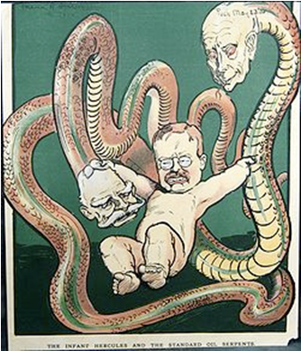

Unit 3 Introduction As the Industrial Revolution was drawing to an end, liberalism was continuing to evolve as an ideology.
Unit 3 Introduction
As the Industrial Revolution was drawing to an end, liberalism was continuing to evolve as an ideology. Liberal writers and thinkers (like Adam Smith, John Locke, and John Stuart Mill) had championed democracy, individual rights, and free, market-driven prosperity. In truth, however, these were ideals that appeared to be out of reach for many segments of the population.
While calling themselves democracies, countries like Canada and the United States excluded individuals from the political process based on income, race, and gender. Individual rights were also limited on a variety of grounds. Economically, overall standards of living had improved, but working classes were often still subject to exploitation by greedy and unscrupulous employers and businesspeople.
As liberal democracies entered the twentieth century, politicians and social activists started to address many of these issues. Social and economic upheavals forced governments to continually re-evaluate the ideals of classical liberalism and to make modifications that seemed appropriate to the time and circumstance.
In the twenty-first century and faced with new challenges, governments and citizens alike must continue to evaluate the course liberalism has taken over the past century.
As a citizen, you have a stake in how governments react to the political and economic challenges before them. Module 3 will help you understand how liberalism has evolved over the past 130 years. This unit will also help you provide informed input into how you think liberalism should evolve in the future.
You will explore the following key question in this unit:
To what extent are the modifications made to liberalism in the twentieth and twenty-first centuries justifiable?
As you work toward answering this question you will also be a step closer to determining the extent to which we should embrace any particular ideology, which is the central issue of this course.
Section Introduction In this section you will begin to develop an understanding of how democratic rights and the practical application of government power have evolved under modern liberalism.
Section Introduction
In this section you will begin to develop an understanding of how democratic rights and the practical application of government power have evolved under modern liberalism. You will explore the history of democratic rights and the governmental structures of both Canada and the United States.
In this section you will answer the following question:
How do the structures of modern democratic governments reflect the principles of liberalism?
In This Section
In this section there are two lessons.
In each lesson you will have opportunities to
• explore how liberalism has evolved in two modern democracies • compare how different modern liberal democracies have implemented the ideals of liberalism
Outcomes
In this section you will:
• analyze the evolution of modern liberalism as a response to classical liberalism
• analyze the extent to which the practices of political and economic systems reflect principles of liberalism
As well you will continue to develop the following skills and processes:
• engage in active inquiry and critical and creative thinking
• use and manage information and communication technologies critically
• conduct research ethically using varied methods and sources; organize, interpret and present your findings; and defend your opinions
• apply skills of metacognition, reflecting upon what you have learned and what they need to learn
• communicate ideas and information in an informed, organized and persuasive manner.
Section Glossary
bicameral legislature: a legislature that is comprised of two legislative "houses", both of which must approve a bill before it becomes law
bill: a proposed law under consideration by the government
coalition government: in a parliamentary system, the term used to describe a situation where two or more rival parties agree to work together, combining the seats they have won in an election in order to have sufficient total seats to form the government
electorate: the citizens within a population who are eligible to vote
federal system: a system of government under which power is divided between the national government and provincial, state or territorial governments
franchise: see suffrage
majority government: in a parliamentary system, the term used to describe a situation where the governing party has more than 50% of the available seats in the legislature
minority government: in a parliamentary system, the term used to describe a situation where the governing party more seats than any other party in the legislature, but has less than 50% of the total seats
plebiscite: A plebiscite is an expression of public opinion, it is advisory only and not binding on government, whether federal, provincial or municipal.
Progressivism: a liberal movement of the early 20th century that sought political, economic and social reform in the United States.
recall: a political process by which the electorate, by way of new election outside of the time frame of regular general elections, may reverse a previous decision to elect an individual to public office
referendum: a direct vote by the electorate on an issue of importance. A referendum is usually (unless non-binding) legally binding verdict of the people which must be acted upon by the government in the form of a law.
representation by population: a system under which individuals elected to government represent roughly similar numbers of citizens
residual powers: the constitutional right of a level of government to legislate matters not explicitly referred to in the constitution.
secret ballot: the provision that voters should be able to cast their ballot in private and that no other individual should have knowledge of how they voted unless the voter wishes to inform them.
simple plurality system: an electoral system in which the winning candidate is the one who receives the highest number of votes: also called first-past-the-post
single member constituency: a system under which a single individual represents the citizens of a riding or constituency
Evolving Liberalism and Canadian Government Get Focused Imagine the government decided to pass a law requiring all persons under eighteen years of age to wear a government approved uniform at all times when in public.
Lesson 1: Evolving Liberalism and Canadian Government
Get Focused
Imagine the government decided to pass a law requiring all persons under eighteen years of age to wear a government approved uniform at all times when in public. The justification for the law might be to give police an easy way to identify minors.
How would you respond to such a law? Would you see it as an unjustifiable attempt to limit your freedom or your individual identity? Would you accept it as a legitimate requirement for law enforcement and public security? If the people felt the law was wrong, what power would they have to change it?
These are important questions that relate to how Canada has built upon the concepts of freedom, democracy and individualism laid out by the great liberal thinkers of the past. An understanding of how evolving views on liberalism has affected the political power and individual rights in this country will be important as you tackle future challenges in this course and the challenges that will face you as a citizen of Canada.
In this lesson you will explore the question:
To what extent has Canada interpreted liberal principles and integrated them into its governmental structure?
Explore
Power to the People: The Right to Vote
The most fundamental component of democracy is the idea that the ultimate power to govern lies with the governed. As you remember, in ancient Athens, that was only partially true. Only males who were verifiable citizens of Athens could take part in
While Canada has had a democratically elected government since 1867, universal suffrage (the right to vote) was not achieved until much later. At confederation, the requirements for individuals to vote in federal elections were set out by provincial governments, so they varied from province to province. Typically, however, the franchise (the right to vote) was restricted to males who owned property of a certain value. Women, aboriginals and many ethnic minorities were prohibited from voting. In a sense, voting rights in Canada were not significantly more advanced than they had been in ancient Greece.
Discover
Using the internet or library resources, research the evolution of the franchise in Canada. Create a voting Rights Timeline that shows when the following milestones were reached.
• minimum age to vote reduce from 21 to 18 years of age
• women received the right to vote
• Asian Canadians receive the right to vote
• people with mental disabilities receive the right to vote
• First Nations Peoples living on reserves receive the right to vote
• The Charter of Rights and Freedoms guaranteed the right to vote to all Canadian citizens.
Check your timeline by identifying the approximate year in which each milestone on the road to universal suffrage in Canada was achieved. Make any required corrections to your “Voting Rights Timeline” and then place this timeline in your portfolio as a study resource. You can check your work here.
Journal/Notes
Briefly summarize what you feel you learned from your research. Was their anything about what you learned that surprised you?
In your search for information did you discover any groups in Canada that still do not have voting rights? Should voting rights be extended to landed immigrants (people who reside in Canada but are not Canadian citizens)? Should the voting age be lowered further, perhaps to 16 years of age?
Direct Democracy in Canada
As you have discovered, the understanding of who should have the right to vote and run for political office in Canada has broadened considerably over the history of the nation. Canadians can now rightly claim to have a much more inclusive democracy than existed in ancient Athens, but Canada still has some problems that plagued ancient Greek democracy, only they are much larger.
You should recall from previous lessons that ancient Athenians engaged in direct democracy, that is, each eligible voter had the right to vote on each issue before the government. In Athens, not everyone could show up all the time to vote. People were sometimes too busy to take the time to attend assemblies or to familiarize themselves with the issues under debate.
Flash forward to modern-day Canada with a population of over 30 million people. Direct democracy would be very difficult to implement here. It would be very difficult to provide a venue for millions of people to express their opinions, consider all the opinions of others, debate suggested policies and then hold a vote on which one to follow. As well, Canada is a large and complex nation. There are multitudes of issues which need to be dealt with. Laws must be carefully written and detailed. A single bill (a proposed law under consideration by the government) can be pages and pages long and deal with subject matter that is unfamiliar to many individuals. Most people in Canada, like many ancient Athenians, could not, or would not, spend the time to review all proposed laws.
Direct democracy, then, is used only in rare instances in Canada. If elected politicians see an issue as so important that they wish the electorate (the citizens within a population who are eligible to vote) to play a key role in decision making, they may opt to hold a referendum (a direct vote by the electorate on an issue of importance) or a plebiscite.
A referendum is a legally binding verdict of the people which must be acted upon by the government in the form of a law. A plebiscite is little more than an expression of public opinion; it is advisory only and not binding on government, whether federal, provincial or municipal.
Referenda and plebiscites may be binding or non-binding. In a binding referendum, politicians must implement the decision reached by the direct vote. A non-binding referendum is held to provide politicians with a sense of the people’s opinion on an issue, but the politicians are not required to follow through with what the people decide.
Plebiscites and referenda are used more frequently at local levels of government. Citizens may be asked to vote a local issue at the same time they choose their city councillors. National referendums are far more rare. There have been only three national referenda in Canada since confederation. The most recent, held in 1992, asked Canadians if they wished to make changes to the country’s constitution. These changes were outlined in a document called the Charlottetown Accord which, among other things, proposed changes to the status of aboriginals and to Quebecois society within Canada. In the referendum, Canadians rejected the proposed amendments to the constitution.
Holding a referendum on the Charlottetown Accord was expensive. It was also divisive. Many Quebeckers saw the result as a rejection of Quebec’s distinctiveness within Canada. In 1995, Quebec held it’s own referendum on whether or not the province should remain in Canada, or become a sovereign nation. By the narrowest of margins, Quebeckers chose to remain part of Canada.
Representative Democracy in Canada
Since the problems associated with direct democracy make it generally unworkable in a large nation, Canada ensures that ultimate decision-making power rests with the people by using representative democracy. In Canada, elections are held in which votes chose individuals to represent them in government. Should the representative not be sufficiently attentive to the will of voters, they may be voted out of office in the next election. In fact, in British Columbia, in cases where many citizens feel a particular representative is not representing them adequately in the provincial legislature, voters may petition for a recall election. They may choose to replace their representative long before the next general election.
Understanding exactly how the representative democracy works in Canada is important, not only because as a citizen you should understand how your government is chosen, but because some people suggest that there are imperfections in the Canadian system that undermines the true spirit of liberalism.
Media
This 2-minute video explains how representative democracy works in Canada:
At the national (federal) level, representatives are referred to as Members of Parliament (MPs). At the provincial level there are varying titles applied to representatives, including Members of the Legislative Assembly (MLAs), Members of the Provincial Parliament (MPPs) or Members of the National Assembly (MNAs).
Forming a Government
While eligible voters vote for the individual candidates whom they believe will best represent them in government, the actual power to govern is determined by which political party wins the most seats in the House of Commons.
Media - Minority/Majority/Coalition Governments
The following media piece will explain how the number of seats won in an election determines who has the power to govern the country:
The Constitution: Protecting Rights on Paper Once people are elected to power, how can citizens be assured that those elected will not abuse that power?
In Canada, the power of government is limited by the following factors:
Canada has a written constitution that spells out the powers of government, and how that power is divided between the federal government and the provincial governments.
There are many traditions that have been accepted as being part of an “unwritten” constitution.
There are laws, such as election laws, that are seen to “have a constitutional effect.”
The rights of individuals are also enshrined in the constitution in a document called the Charter of Rights and Freedoms.
Journal/Notes
Do you know what your rights are under the Charter of Rights and Freedoms? You may be familiar with people being “read their rights” on TV crime dramas. Be aware that most of those programs are produced in the United States where a slightly different set of rights and freedoms are in force. What rights do Canadians have under the constitution? If you don’t know, how could you find out?
The Separation of Powers Following the principles set forth by Charles de Montesquieu and others, the various powers of government in Canada are divided up among three branches.
Media - Branches of Government
The following “Branches of Government” piece explains the branches of government in Canada.
Preventing Majority Tyranny One of the main differences between democracy and liberal democracy is the recognition that the rule of the majority should not undermine the rights of minorities.
In Canada, power of the majority is limited in several ways.
The bicameral legislature you learned about earlier was put in place to help compensate for the fact that the majority of Canada’s population living in one region, might be able to use its political power to override the interests of minority populations living elsewhere in the country.
Representation in the House of Commons is achieved through representation by population. Therefore more heavily populated regions of the country have more representatives in the House of Commons and, consequently, more political power.
Each riding has one MP. Which parts of the country have the most representation in the House of Commons?
Seats in the senate are portioned, to some degree, on a regional basis. Examine the table below.
Province/Territory
Number of Senate Seats
British Columbia
6
Alberta
6
Saskatchewan
6
Manitoba
6
Ontario
24
Quebec
24
New Brunswick
10
Prince Edward Island
4
Nova Scotia
10
Newfoundland & Labrador
6
Yukon
1
Northwest Territories
1
Nunavut
1
Under the present arrangement, the western provinces combined have roughly equal voting power in the senate to either Quebec or Ontario. Some of the maritime provinces have a 10 senate seats each, despite having relatively small populations compared to the western provinces. This arrangement was concluded in 1867 at Confederation when the maritime provinces had a much higher population than the west.
Journal/Notes
Knowing what you do about Canada’s senate, how effective do you think it is in protecting the interests of provinces with smaller populations?
While some thought was given to balancing the rights of populous and less-populous regions of the country, the road to the protection of other minority rights has been a long one in Canada.
Perhaps the most pivotal event occurred in 1982, when Canada last amended its constitution. The Charter of Rights and Freedoms was made part of the constitution making it much more difficult for governments to pass discriminatory legislation. Moreover, the Charter spawned legal challenges to existing laws and policies. Many of these led all the way to the Supreme court. A number of laws have been struck down and others have been rewritten based on the findings of the court.
Journal/Notes
How did other people’s lists differ from yours? What might account for those differences? Do you think a person’s personal identity or collective identities can shape their views on minority rights? If so, how?
Canadian Government Budget, Expenditures and Revenues Explained
Watch these short videos created by CIVIX to understand where the Canadian government gets and spends its money. Do you think some or all of this should change?
The Government of Canada's Budget:
The Government of Canada's Expenditures:
The Government of Canada's Revenues:
Lesson Summary
Canadian government and Canadian society was founded on many of the basic principles of liberalism developed by Lock, Montesquieu, Mill and others. Our government has been structured to provide representation to the citizens and give them the right to choose who will govern. Safeguards have been put in place to limit the power of those who govern once they are in power.
That said, the protection from the power of government and the right to participate in it has been selectively applied over the course of history in Canada. Many groups have been subject to majority tyranny, often targeted because of their race, ethnicity or religious beliefs. As Canada has evolved as a nation, our understanding of liberalism has changed as well. The list of rights associated with liberal democracy continues to be expanded and these rights are being applied more equitably in present Canadian society than in the past.
Despite these advances, many would argue that there is still room for improvement. Over the course of this lesson, perhaps you have identified some imperfections in the implementation of liberal democracy in Canada. If so, keep them in mind. In subsequent modules you will further explore many of these problems and make recommendations for solutions.
Review - Democratic Systems
Listen: Direct Democracy and Representative Democracy
Listen: Constitutional Monarchy
Listen: Federal System
Listen: Parliamentary Democracy
Glossary
recall: a political process by which the electorate, by way of new election outside of the time frame of regular general elections, may reverse a previous decision to elect an individual to public office
single member constituency: a system under which a single individual represents the citizens of a riding or constituency
representation by population: a system under which individuals elected to government represent roughly similar numbers of citizens
simple plurality system: an electoral system in which the winning candidate is the one who receives the highest number of votes; also called first-past-the-post
majority government: in a parliamentary system, the term used to describe a situation where the governing party has more than 50% of the available seats in the legislature
minority government: in a parliamentary system, the term used to describe a situation where the governing party more seats than any other party in the legislature, but has less than 50% of the total seats
coalition government: in a parliamentary system, the term used to describe a situation where two or more rival parties agree to work together, combining the seats they have won in an election in order to have sufficient total seats to form the government
bicameral legislature: a legislature that is comprised of two legislative "houses", both of which must approve a bill before it becomes law
representation by population: a system under which individuals elected to government represent roughly similar numbers of citizens
Liberal Democracy in the United States Get Focused Established in 1776, the United States developed a democracy that was influenced by the classical liberal thinkers of the day.
Lesson 2: Liberal Democracy in the United States
Get Focused
Established in 1776, the United States developed a democracy that was influenced by the classical liberal thinkers of the day. It is also fair to say that the American approach to liberal democracy has been influential in its own right. The United States is an economic, military and political superpower that has encouraged other nations to adopt its brand of liberalism, on occasion even imposing it on other nations. American cultural industries, with their global reach, have helped to shape not just the American concept of what a liberal democracy is, but the world’s view.
Given the influence that United States has in the world, it is important then, to examine how liberal ideas have shaped the government of the U.S. and how ideals of liberalism have been implemented and modified in America.
In this lesson you will explore the question: How has the United States interpreted liberal principles and integrated them into its governmental structure.
Explore
Internet Activity
The Right to Vote in the United States
Like Canada, universal suffrage was not extended to all adult citizens of the United States immediately upon Independence in 1776. The legalized denial of the franchise and other impediments to voting continued well into the twentieth century.
Research three of the major milestones in the road toward univresal suffrage in the United States. Try to think in terms of providing the 5 Ws and the “1 H” (who, what, where, when, why, and how). Make this a summary, not a detailed story.
Post the resutls of your research in the Student Activies discussion.
These are some search terms to begiin your exploration:
Progressivism: Putting More Power in the Hands of More People
In the first two decades of the 20th century, a liberal movement called Progressivism became influential in the United States. Progressives like President Theodore Roosevelt and Robert La Follette sought to make changes to the existing economic and political order. Many progressives felt that, despite the fact that the United States was founded on the principles of liberalism, political power was still concentrated in the hands of too few people. Progressives successfully instituted a number of democratic reforms, especially at the state level of government. Some of these reforms included:
• broadened the use of initiatives, a system under which ordinary citizens could propose laws for consideration by the legislative branch.
• the introduction of recall legislation in several states. This gave voters the power to remove elected officials seen to be incompetent or who failed to live up to their election promises.
• the use of the secret ballot in state elections. Privacy during voting meant that employers could not intimidate their employees into voting for a particular candidate.
• the use of referendums. Citizens could employ direct democracy to render important decisions.
• the direct election of Senators by the people of the state they represent. Previously, a state’s representatives in the U.S. senate were selected by the members of each state legislature, a process was inefficient and often corrupt.
Progressivism: a liberal movement of the early 20th century that sought political, economic and social reform in the United States.
secret ballot: the provision that voters should be able to cast their ballot in private and that no other individual should have knowledge of how they voted unless the voter wishes to inform them.
The Simple Plurality System in the United States Like Canada, the United States generally uses the first-past-the-post system to determine which candidate becomes the people’s representative. However, U.S. politics is dominated by two political parties, the Republicans and the Democrats. While other parties and independent candidates may still run for election, they seldom capture a significant share of the vote. This means that candidates who get the most votes usually also have won the majority of votes cast and can justifiably claim to represent a majority of their constituents.
Choosing the President One area where the first-past-the-post system is not used in the U.S. is in the selection of the president. The president is selected using the electoral collage system. Under this system, voters cast ballots for their choice for president, but the president is not directly elected on the basis of that vote. Instead, each state is assigned a number of electors based on the number of representatives it has in the legislative branch of the federal government. These electors are the people who actually cast the votes that decide which presidential candidate will become the president. The electors, however, generally don’t get to decide how they vote. They are usually expected to cast their vote based on which candidate has won the popular vote in the presidential election in their state. Ultimately, it is expected that electors will exercise the will of the people.
The Structure of American Government The structure and workings of the federal government of the United States share many similarities with Canada, but there are some important differences.
Media - Structure of US Government
Watch this video explaining the Branches of the US Government:
Electoral College
Not sure what the electoral college is or how President Trump won the election with less votes than Hillary Clinton? This has happened before. Watch this video to understand why:
Journal/Notes
Do you see any advantages in the way that the separation of powers has been implemented in the United States over how branches of government are arranged in Canada? Which system do you think puts more power in the hands of the people and why?
The Constitution and the Bill of Rights
In the United States, the constitution is one written document—the Constitution of the United States of America. In Canada, the constitution is a combination of a written document and laws and traditions that are established “conventions” that are said to have a “constitutional effect.”
Learning Activity
Using the Internet, research the Constitution of the United States of America and answer the questions on the worksheet Bill of Rights.
Save your completed worksheet in your journal/notes.
Going Beyond
As a result of various decisions by the Supreme Court, Canada has prohibed sexual orientation as grounds for discrimination. Gay and lesbian couples in Canada can now marry and enjoy the same rights and privileges as heterosexual couples.
Do some research. Where does the U.S. stand with respect to gay rights? How does the handling of gay rights in the United States illustrate the difference between the concepts of democracy and liberal democracy?
Lesson Summary
The United States is seen by many as one of the great liberal democracies of the modern world. While its governmental structure and constitution were clearly influenced by the ideas of early liberal thinkers, many segments of American society were excluded from the rights and protections built into the constitution. The concept of liberalism in the United States continued to evolve over time. That evolution can be traced in the amendments to the U.S. constitution.
Like many nations, the United States continues to struggle with the ideal of how liberal a liberal democracy should actually be. The information and concepts you have explored in this lesson will serve as a good foundation as you begin to look at this issue yourself later in the course.
Section Summary
In this section you have explored the liberalism as it has evolved within the democracies of Canada and the United States. Although on different timelines and to different degrees the governments of both nations have gradually broadened suffrage and expanded the notion of basic rights.
The two nations have embarked on slightly different courses in their approach to the structure of government. Canada’s parliamentary system fuses the role of the executive branch with the legislative branch and relies on the principle of responsible government to check the power of the executive. The United States, on the other hand, has solidly embraced the concept of separation of powers and has built in a series of checks and balances to ensure that no branch of government can entirely dominate the others. Despite these differences, both systems incorporate basic principles of liberalism such as government accountability to the people and constitutional protection of individual rights.
The different approaches taken to choosing and structuring government each have their strengths and weaknesses. Having assessed many those strengths and weaknesses you will be better equipped to tackle the key inquiry for this unit:
To what extent are the modifications made to liberalism in the 20th and 21st centuries justifiable?
Glossary
popular vote: the percentage of the total votes cast received by a candidate or a political party
Section 2 Introduction: Re-evaluating Liberal Economic Ideals In Section 1 you explored the political changes that occurred as liberalism evolved.
Section 2 Introduction: Re-evaluating Liberal Economic Ideals
In Section 1 you explored the political changes that occurred as liberalism evolved. In this section you will examine how classical liberal ideas about economics were both modified and revisited during the twentieth century.
In this section you will answer the following question:
How have liberal economic principles evolved since the turn of the last century?
In This Section
In this section there are three lessons.
In each lesson you will have opportunities to
familiarize yourself with the evolution of liberal economic thought
explore the main approaches to managing economies in liberal democracies
Outcomes
In this section you will:
• analyze the extent to which the practices of political and economic systems reflect principles of liberalism
• analyze ideologies that developed in response to classical liberalism
• analyze the evolution of modern liberalism as a response to classical liberalism
• analyze the dynamic between individualism and common good in contemporary societies
• examine historic and contemporary expressions of individualism and collectivism
As well you will continue to develop the following skills and processes:
• engage in active inquiry and critical and creative thinking
• use and manage information and communication technologies critically
• conduct research ethically using varied methods and sources; organize, interpret and present your findings; and defend your opinions
• apply skills of metacognition, reflecting upon what you have learned and what you need to learn
• communicate ideas and information in an informed, organized and persuasive manner.
Section Glossary
bank run: a situation in which a large depositors at a bank attempt to withdraw their savings at the same time usually resulting in the bankruptcy of the financial institution
consumerism: an economic philosophy based on the continued and increasing consumption of goods by the population
deficit: the negative value obtained when expenditures exceed income
demand-side economics: an economic theory that advocates direct government intervention in the economy through fiscal measures such as government spending and taxation; also called Keynesian economics
fiscal policy: government policies with respect to spending and taxation
Great Depression: a deep and prolonged economic downturn that lasted through most of 1930s
income disparity: the difference between in earnings between the wealthy and poorer members of society
inflation: a decrease in the purchasing power of money typically characterized by rising prices and demands for increases in wages
monetary policy: policy designed to control the economy by increasing or limiting the supply of money available; usually controlled by a central bank
monopoly: in business, a situation in which one company has exclusive control of the production and or retail of a particular good or service
neo-liberalism: literally “new-liberalism”; primarily an economic philosophy that returns to many of the basic economic ideals laid out by classical liberal economist like Adam Smith, but with even less of a role for government than Smith advocated.
New Deal: an economic program instituted by Franklin Roosevelt’s administration during the 1930s. It was characterized by increased government regulation of private industry, massive government spending on public works projects government programs to aid the economically disadvantaged
Reaganomics: term given to the supply-side economic policies instituted under the administration of U.S. President Ronald Reagan in the 1980s.
social programs: government programs that provide financial aid and health, education and similar services to certain groups within the population
stagflation: a situation in which an economy appears to be in recession but is still subject to rising prices and wage demands
supply-side economics: a economic theory that advocates reducing taxes permanently, especially for the wealthy, and reducing government regulation in the economy.
trickle-down economics: the concept that, under a supply-side approach to economics, tax breaks for the wealthy would encourage investment and create jobs, thereby allowing wealth to “trickle-down” to the middle and lower classes
trust: in business, an arrangement where companies in the same industry agree not to compete with one another, thereby artificially controlling the price of the goods or services they provide
welfare capitalism: term used to describe used to describe a situation where industrialists initiate programs and policies that benefit their workers; a system that combines liberal economic ideals with government legislation, policies and programs that protect workers rights and provide basic services like health care and unemployment insurance.
welfare state: term used to describe a situation where government provides for many of the material, social and economic needs of the population. Services may include financial support for the unemployed, health and dental care, child care, grade school and post-secondary education as well as funding public transportation, parks and the arts.
Reigning in the Free Market Get Focused The theories and ideals associated with classical liberalism provided much of the foundation for the economic growth and technological advan...
Lesson 1: Reigning in the Free Market
Get Focused
The theories and ideals associated with classical liberalism provided much of the foundation for the economic growth and technological advances that characterized the Industrial Revolution. As you have also learned, however, a significant portion of the population saw little benefit from these advances.
The social and political movements that arose in response to liberalism in Britain continued to evolve in the nineteenth and early twentieth centuries. As the Industrial Revolution took hold in the United States, pressure to address the inequities caused by capitalism also increased there as well.
While moderate steps were taken to address such inequities in many liberal democracies, the basic ideals of individualism and laissez-faire economics would continue to dominate in the industrialized world until the end of the 1920s. A cataclysmic economic event at the end of that decade called into question the economic theories of classical liberals thinkers. The result would be a new approach to liberal economics that would give government a far larger role in economics.
In this lesson you will explore the question:
To what extent have liberal democracies adopted and modified liberal economic principles?
Explore
In order to understand how the economic ideals of classical liberalism were reflected in the United States it is important to familiarize yourself with a bit of history. Complete the following “Discover” activity to give yourself the background you need to understand why and how liberal economic ideas in the U.S. began to be changed.
As you read, create a concept map or a set of Cornell-style notes for yourself. Place your completed note package or concept map in your notes. You will need it as a study reference for upcoming assignments and exams and your teacher may ask to see it to confirm completion and make sure you are on the right track.
Media
Reinforce what you have learned by watching the first 38 minutes of Commanding Heights, Episode One, The Battle of Ideas, by PBS.
Search in your favourite video sharing platform for "Commanding Heights Episode 1"
Watch from 1:00-38:30 minutes.
Bookmark the link to the video. You'll watch the remainder in the next lesson.

Lesson Summary
Exploitive and abusive practices by wealthy industrialists during the 1800s and early 1900s eventually forced governments to take steps to regulate business and provide some protection to workers. That said, in the United States, the notion that the free market would lead to ultimate prosperity for all citizens was still dominant throughout the 1920s. The 1929 stock market crash and the associated depression shook confidence in the liberal ideals of Adam Smith.
Programs like Franklin Roosevelt’s New Deal reshaped liberal economics and attempted to combat the Great Depression through an increased government regulation of private business and direct government involvement in the economy through government spending.
Many of the programs created under the New Deal were inspired by the economics theories of John Maynard Keynes. Keynesian, or “demand-side” economics, took an interventionist approach to the economy, advocating government action to regulate the ups and downs of the business cycle.
Some people would argue that the Keynesian approach would become the standard in economics for years to come to the detriment of the economies of many liberal democracies.
Study the political cartoon presented here. The caption says "The Infant Hercules and the Standard Oil Serpent." Who is the "infant Hercules" in this cartoon? Consider the ideological perspective of the artist who created this cartoon. What is their message? Tip: Research Standard Oil. You may use this research in upcoming assignments and/or exams.
Enrichment/Review - Market Economy Crash Course Video
To better understand the Market Economy, watch this 10-minute Crash Course video:
The Problem with Keynes Get Focused The idea of the government providing jobs and services for people sounds good on the surface, but could there be some drawbacks as well.
Lesson 2: The Problem with Keynes
Get Focused
The idea of the government providing jobs and services for people sounds good on the surface, but could there be some drawbacks as well. Who is going to pay for those services? What if you run a private company that now has to compete with a government that has started to provide the same service?
In the latter half of the 20th century, many people began to question the interventionist polices that took hold in the Great Depression and continued to expand, guided by governments influenced by the theories of John Maynard Keynes. And by the 1970s, problems with their application of the Keynsian approach to managing the economy were becoming apparent.
In this lesson you will explore the question:
To what extent have modern liberal approaches to economics succeeded?
Explore
Let’s start by briefly reviewing Keynesian economics. The following multimedia piece will provide some insight into the problems associated with the application of Keynes’ theories.
Watch & Listen - Understanding Keynes
Watch this short video animation Understandnig Keynes:
Or right click here to download and watch the .mov file on your computer. Right click and save the link or target to your desktop and play this .mov file on your media player.
Read
Read pp. 146-149 and 214-224 in Perspectives on Ideologies. - -
As you read, create a set of Cornell-style notes or a concept map that will encapsulate the important ideas, events and individuals discussed in the reading. As usual, you will want to retain your notes or concept map as a study reference for upcoming exams.
Watch this short animation that highlights and explains some of the key points from the reading.
Or watch the remainder of Episode one of Commanding Heights (from 34:00 - 1:54 minutes - see previous lesson in U3). This will provide you with an in-depth exploration of the ideas, issues and events explored in the reading above.
Lesson Summary
By the 1970s, many western nations were deeply in debt. This is because governments spent money to buoy up economies in bad times but did not drop spending or increase taxes in good times.
Stagflation led governments to revisit the ideas of Frederich Hayek and his modern compatriots like Milton Freidman. By the 1980s Keynesian economics was out and monetarism and supply-side economics were in. Governments began cutting taxes and spending. The power of labour unions was often curtailed. Some governments began to run surpluses and even whittle away at public debt.
Free market capitalism was back in vogue and, to ensure the market was as free as possible, many conservative governments began to reduce government regulation of business. As you will discover in the next lesson, this swing back to the right side of the economic spectrum would not be without consequences.
Glossary
stagflation: a situation in which an economy appears to be in recession but is still subject to rising prices and wage demands
deficit: the negative value obtained when expenditures exceed income
Reaganomics: term given to the supply-side economic policies instituted under the administration of U.S. President Ronald Reagan in the 1980s.
supply-side economics: a economic school of thought that advocates reducing taxes, especially for the wealthy, and reducing government regulation in the economy.
trickle-down economics: the concept that, under a supply-side approach to economics, tax breaks for the wealthy would encourage investment and create jobs, thereby allowing wealth to “trickle-down” to the middle and lower classes
neo-liberalism: literally “new-liberalism”; an economic philosophy that returns to many of the basic economic ideals laid out by classical liberal economist like Adam Smith
Review/Enrichment
To review, or if you still need help understanding market, mixed and command economies, watch this YouTube Crash Course on Economic Schools of Thought (you may need to close the ad):
The pendulum swings back Get Focused As the 1980s unfolded, conservative governments in many countries were implementing the neoliberal economic programs advanced by advocates of supply-side economics and monetarism.
Lesson 3: The pendulum swings back
Get Focused
As the 1980s unfolded, conservative governments in many countries were implementing the neoliberal economic programs advanced by advocates of supply-side economics and monetarism. A reinvigorated free market system was taking hold, not just in the United States, but globally as well. Many governments loosened the regulations governing banks and financial corporations and weakened government enforcement of the regulations that did exist. As in the late 1920s, many people believed that the world was enjoying a period of prosperity that would continue for years to come. With low interest rates available to consumers and the availability of cheap goods from newly industrialized nations in Asia, consumer spending and consumer debt continued to rise, especially in the United States. Only a few people recognized that there were dark clouds on the economic horizon.
In this lesson you will explore the question:
To what extent have neoliberal approaches to economics been successful in providing prosperity and economic stability?
Explore
In 2008 world economy began a plunge into recession. The speed and depth of this plunge led many observers to immediately draw comparisons to the 1929 Stock Market Crash and Great Depression of the 1930s. As before, the roots of the recession could be tied to economic practices in the country with world’s largest economy, the United States. A combination of low interest rates, irresponsible consumer spending, investor greed and lax government regulation set the stage for a financial crisis that would rock the entire globe.
Watch & Listen
Watch this 11-minute video to gain an understanding of how the “credit crisis” of 2008 led to wider problems for banks and investors in the United States and around the world:
To understand how quickly the problems associated with the “credit crisis” began to spread through the American economy conduct a search of the internet with the following terms:
“global financial crisis timeline”
Check out the top hits returned and review whatever timelines you feel are clearest and most straightforward. Remember to review more than one, however, to ensure that you are getting an accurate and unbiased picture of what occurred.
Pause and Reflect
What role did monetary policy play in setting the stage for the credit crisis?
Many people point to the last week of October 1929, when New York Stock Exchange suffered three major crashes, as the week that marked the start of the Great Depression. If you had to chose a pivotal, day week or event from the timelines that you have reviewed what would it be? What do you think was the first clear indicator that financial markets were in real trouble?
Critical Thinking Area
Economics is a subject that stimulates passion among many people and as you can see, there are some divergent opinions regarding how to manage an economy. Bear in mind that in your search you will likely come accross sites that offer more opinions and less facts. Keep an open mind, but be aware of the biases that may exist and check key facts with multiple sources where possible.
Going Beyond
Many point to lax regulation of banks and investment firms as a significant factor leading to the collapse of the global economy that started in 2008. The lack of oversight was compounded by risky investment strategies followed by many of these financial institutions.
Canadian banks, however, were largely shielded from the forces that drove many other banks to near collapse. Do a little research on the web. Find out if/why Canadian banks escaped the worst effects of the sub-prime mortgage fiasco and its subsequent fallout.
Lesson Summary
The global economy during the first decade of the 21st century appeared to be running reasonably smoothly. Inflation was in check and, to stimulate the economy, central banks had lowered their interest rates to levels not seen in thirty years. For investors, however, low interest rates meant a low return on the traditionally safer investments that were tied to the bank rate. In an effort to gain better returns, many financial institutions entered in to the risky world of sub-prime mortgages that were being offered primarily in the United States. Lax government regulation of the financial industry not only allowed people to take out mortgages that were beyond their means, but allowed mortgage brokers to sell these mortgages as investments to other financial institutions such as pension plans. The neoliberal approach to economics, its critics would contend, had now provided too much freedom in the market.
By late 2008 flaws in sub-prime mortgage schemes were becoming apparent. As home owners defaulted on their mortgages, banks were left with foreclosed properties that could not be sold at anywhere near the value of the loans made to purchase them. Billions of dollars in losses drove some of the oldest and strongest financial institutions in America to seek financial assistance from the government or, in some cases, out of business entirely. Other banks around the global that had bought into sub-prime mortgage investments suffered the same fate.
The effects of failing banks and dropping house prices rippled through the economy leading the global economy into recession.
The administration of newly elected U.S. President Barak Obama was faced with an economic crisis on a scale not seen in eighty years. The U.S. government and governments around the globe were forced to re-evaluate the neoliberal policies that led to the downturn. Moreover, with interest rates already hovering near zero, the primary economic lever advocated by monetarists appeared broken. Governments began to look back to the solutions offered during Great Depression and to re-introduce Keysian doctrines that had fallen out of favour. It will be your task as an active citizen to evaluate this course of action and judge for yourself if it is appropriate.
Unit 3 Summary The word liberalism is associated with change, and aptly so. Over the past 130 years liberalism has continued to evolve as an ideology.
Unit 3 Summary
The word liberalism is associated with change, and aptly so. Over the past 130 years liberalism has continued to evolve as an ideology. Universal suffrage, mechanisms for limiting government power and the constitutional protections affording equality and human rights have made the nations like Canada and the United States justifiably “liberal” democracies.
Liberal economic theory has evolved significantly over the same period. At the turn of the 20th century governments began to place some limits on the market. Recognizing that economic freedoms could not be absolute, policies were brought in to prevent monopolies and provide some protection to workers and consumers. Nonetheless, capitalism, particularly in America, was comparatively unrestricted. The unprecedented stock market crash of 1929 would cause the U.S. government to re-evaluate that level of economic freedom.
The stock market crash and the Great Depression that followed precipitated the rise of the welfare state and the interventionist policies advocated by John Maynard Keynes. By the late 20th century this shift away from classical liberal ideals was being questioned as national debts grew and stagflation set in. You have reviewed the response of influential economists, like Hayek, and politicians from the 1980s onward, who spurned the combined collectivist/individualist policies of Keynes and his modern liberal followers, and re-established an economic ideology more consistent with the ideals of individualism and classical liberalism. This new variant of liberalism is known as neo-liberalism (also known as neo-conservatives). By 2008, however, recession and failing banks were once again requiring governments to intervene in the free market in an attempt to provide stability. And yet again during the COVID-19 pandemic and subsequent recession.
Your understanding of these events is crucial. Liberalism will continue to evolve in your lifetime, informed by what has occurred in the past and what is happening now. There are still groups within society who argue that they are still not afforded sufficient rights. Other groups contend the present structures of government do not truly serve the interests of the electorate. And as you have seen, the ideal approach to economics, individualist or interventionist, is a matter of continual debate.
In this unit you have assessed whether or not the modifications made to liberalism in the past have been justifiable. With this yardstick you have created for yourself, you will be better able to measure and evaluate not only present and future revisions to liberal democracy, but other ideologies as well.
The knowledge you have gained in this unit will allow you to confidently discuss issues related to whether the varying economic modifications made to liberalism in the 20th and 21st centuries are justifiable.
Review Hayek and Keynes - Watch & Listen
You may find this music video helpful as a way to review the main differences between the philosophies of Hayek and Keynes:
Study Help
Click here to open a copy of study notes for this unit. You will need to modify them to suit your needs, but they are a good starting point in reviewing the material.
Unit 4 Introduction For many people who have lived within liberal democracies their entire lives, the notion of rejecting liberalism in favour of an ideology that offers less perso...
Unit 4 Introduction
For many people who have lived within liberal democracies their entire lives, the notion of rejecting liberalism in favour of an ideology that offers less personal freedom and little input into government decisions may appear incomprehensible. Yet for most of history, even after the advent of liberalism, a majority of the world’s population lived under governments that spurned the primary ideals of liberalism in favour of strict government control and little citizen participation in the decision making process. In many cases this strict government rule was imposed on a largely unwilling population by force. In some notable instances, however, liberalism appeared to be rejected by large segments of the populations that found it somehow flawed or inadequate.
In this unit you will examine theories that have been generated to explain why some people reject the concepts of freedom and democracy. You will closely scrutinize the theoretical basis and practical application of the ideologies that have evolved in opposition to liberalism. Finally, you will be asked to draw your own conclusions regarding how well these alternative ideologies have served the nations that have adopted them, leaving you well positioned to answer the unit question, “To what extent is resistance to liberalism justified?”
Section Introduction In this section you will develop your knowledge of the variety of authoritarian systems and begin to explore how, in some circumstances, populations accept and...
Section Introduction
In this section you will develop your knowledge of the variety of authoritarian systems and begin to explore how, in some circumstances, populations accept and support the establishment of authoritarian rule.
In this section you will be answering the question:
What principles underlie the formation and operation of governments that reject liberalism?
In This Section
In this section there are two lessons.
In each lesson you will have opportunities to:
• develop a deeper understanding of the nature of authoritarianism
• reflect on how and why individuals and groups support authoritarianism
Outcomes
In this section you will begin to:
• analyze the extent to which the practices of political and economic systems reflect principles of liberalism
• appreciate various perspectives regarding the promotion of liberalism within political and economic systems
• appreciate various perspectives regarding the viability of the principles of liberalism
As well you will continue to develop the following skills and processes:
• predict likely outcomes based on factual information
• analyze connections among patterns of historical change by identifying cause and effect relationships
• develop inquiry strategies to make decisions and solve problems
• develop, refine and apply questions to address an issue
• select and analyze relevant information when conducting research
• ask respectful and relevant questions of others to clarify viewpoints
• compose, revise and edit text
• plan and perform complex searches, using digital sources
• understand that different types of information may be used to manipulate and control a message (e.g., graphics, photographs, graphs, charts and statistics)
• apply principles of graphic design to enhance meaning and engage audiences
Section Glossary
absolute monarchy: an authoritarian government headed by a hereditary monarch
atrocity:an act of violence or cruelty that viewed as exceptionally shocking due to its nature or extent
authoritarianism: an approach to government in which the leadership is not elected by or accountable to the people it governs.
coup d’état: the forceful overthrow of a government by a small group of individuals
dictatorship: an authoritarian system in which power is concentrated in the hands of a single person; autocracy
dissident: a person who disagrees with the government
emancipation: the freeing of enslaved or indentured people
junta: an oligarchy formed by a committee of military officers
minority tyranny: a form of oligarchy in which the government is operated by, and in the interests of, a minority group within the population
oligarchy: an authoritarian system in which power is concentrated in the hands a small ruling group or committee
totalitarian: term used to describe a dictatorship or oligarchy which attempts to impose its control and ideological beliefs on all aspects of society
Variations on Tyranny Get Focused Multiple Perspectives Imagine you meet three friends on the street with the intention of going to a movie together.
Lesson 1: Variations on Tyranny
Get Focused
Multiple Perspectives
Imagine you meet three friends on the street with the intention of going to a movie together. As you stand in a group trying to decide what show to see, a police van pulls up and three uniformed officers get out. They order you and your friends to stand with your hands against a nearby wall. One of your friend's protests, saying that your group has not done anything wrong. He is immediately struck across the face with a baton. You consider running, but you notice one of the officers is pointing a sub-machine gun menacingly in your direction, so instead you comply.
You and your friends are roughly searched. You are thrown in the back of the van, your injured friend with extra brutality. You are not told why you have been arrested nor are you read your rights.
It is only at the police station, where separated from your friends and placed in a dimly lit concrete room with a malevolent-looking interrogator, that you are informed of your crime. You were standing in a group of more than three people, illegal under your government's “security laws”.
For those of us who have lived our lives entirely under freedoms afforded by a liberal democracy, the above scenario may appear like a scene from a movie. For many people around the world, however, it is all too close to reality. In this lesson you will familiarize yourself with a number of approaches to authoritarian government and explore examples of each. As a result of this exploration, you will be better prepared to identify, analyze and respond to policies and structures within your own country that, while perhaps not patently authoritarian, may be leading in that direction.
In this lesson you will explore the question:
What are the main characteristics of authoritarian regimes?
Explore
Liberal democracy, as you know by now, is a comparatively recent phenomenon. For in most places and in most times in human history, governments of one form or another ruled over the people, not the other way around. Even during the 20th century, most of the world’s population lived under some form of authoritarian rule. Gradually that has begun to change. In 1998, Freedom House, an independent organization that promotes freedom around the world, announced that “40 percent of the world's population now live in Free societies ”. The rest, live in nations where only partial freedom exists or populations live under oppressive authoritarian rule.
Discover
Do a search using the key words “Freedom House Map” to get a visual picture of the degree to which the world has adopted the ideals of liberal democracy.
Exploring Authoritarianism
Authoritarianism is a broad term that applies to systems of government which do not provide all of the democratic, civil and human rights typically associated with modern liberal democracies. Some nations under authoritarian rule, the rare few run by “benevolent dictators” or “enlightened despots”, may afford their citizens some elements of freedom. Review the enlightenment philosopher Thomas Hobbes from U2. Others may be highly oppressive. They maintain control through violence and intimidation of the population, propaganda, indoctrination and staging rallies and events that give the people the illusion of participation in their own governance.
Authoritarian governments come in a variety of forms:
Dictatorship
The word dictatorship is often used to describe any authoritarian government in the much the same way certain brand names are often used casually to describe all cellophane tape or facial tissues. In actual fact, dictatorship refers to a specific kind of authoritarian system. A true dictatorship is an autocracy, where governmental power is concentrated in the hands of a single person. While the dictator will obviously have people around him to help maintain that power and run the government, to be labeled a true dictatorship there must fairly clearly be a single person in charge. Some observers categorize absolute monarchies as a kind of dictatorship. Others, because absolute monarchs gain power through heredity, put them in a category of their own.
Oligarchies
An oligarchy is government by a small group of unelected individuals. In an oligarchy there may be a leader, but power is more divided than in a dictatorship. An oligarchy formed by military officers is referred to as a junta. Since the military officers have control of trained soldiers and heavy weapons, juntas are frequently established through a coup d’état (or simply, coup) in which the existing government is overthrown by force. It is important to note that a coup d’état differs from a revolution in that the ousting of the previous government is done by a small number of people and not always with the support of the general population. A revolution is characterized by the widespread support and participation of the populous in the overthrow of the government.
Oligarchies may also be formed on the basis of religion, race or other factors. In many cases, the oligarchy serves the interests of its small group, to the detriment of the rest of the population. This is often referred to as minority tyranny.
Totalitarian Governments
Totalitarian governments can be dictatorships or oligarchies. They can also be monarchies, if they exhibit the traits, but not all monarchies are totalitarian. It is not so much who is in power (one leader or a group). Rather, what makes them distinctive is the degree to which the government exercises control over the population. In some dictatorships and oligarchies, the leadership may be primarily focused on maintaining political power and perhaps increasing their personal wealth. The average citizen might be able to avoid contact with the government simply by going about their daily business without criticizing the government or otherwise drawing attention to themselves. In fact, the leadership of an oligarchy or dictatorship might be overthrown or replaced by new authoritarian leaders with little recognizable impact for citizens. The leadership may change but the system of authoritarian government remains.
In a totalitarian system, however, the government endeavours to impose its ideology on all citizens. This requires that the government extend its control throughout the fabric of society. Your examination of the Hitler Youth movement in Unit 1 provides you with a good example of how totalitarian governments try to extend their control over their population.
Read
For additional insight in to totalitarian regimes consult your textbook, Perspectives on Ideologies. Read the section entitled “The Nature of Totalitarian Regimes” starting on page 167 and ending on page 168 before the section entitled “The Need for Change in Russia”.
Lesson Summary
While they share a common rejection of many of the fundamental principles of liberal democracy, authoritarian governments may differ widely in their structure, their foundations and their goals. Executive power may be concentrated in the hands of a single leader or dispersed among the ruling elite. In some cases authoritarian rule is based on a long-standing tradition. In others circumstances it comes about through the violent overthrow of a government or through the abuse of executive power by elected officials. The objectives of authoritarian regimes can be as varied as their leadership. A few genuinely seek to better the lives of citizens in some fashion. Others seek primarily power and wealth. Some of history’s most tyrannical regimes were often driven by a desire to remake their nation, and sometimes the world, to fit their particular ideological perspective.
A familiarity with the forms, bases and objectives of authoritarian regimes is important for citizens in a democracy. As you will see in the next lesson, not all authoritarian governments seize power from their citizens with a gun in hand. In some cases, power is handed over willingly by a population unmindful of the signals that their chosen government is not committed to the fundamental principles of liberal democracy. It is, therefore, important for you to see the signs.
The Lure of Authoritarianism Get Focused Over the course of history, authoritarian regimes have been directly responsible for the systematic suppression of human rights and for countless deaths.
Lesson 2: The Lure of Authoritarianism
Get Focused
Over the course of history, authoritarian regimes have been directly responsible for the systematic suppression of human rights and for countless deaths. Joseph Stalin and Adolf Hitler, acknowledged as two of the 20th century’s most brutal dictators, were responsible for the imprisonment and murder of millions of people. Under their regimes, men, women and children were shot, or starved, worked to death or gassed. These atrocities may have been ordered by Stalin and Hitler, but they were carried out by legions of followers, men and women who were willing to turn on fellow human beings at the behest of an authority figure. Perhaps more astounding is the fact that years later, and after the unspeakable crimes committed by these dictators have been documented for all to see, some individuals reminisce about the “good old days” when Stalin or Hitler ruled.
It might be argued that the biggest threat to liberal democracy in any country is not that people’s freedoms will be taken from them by force, but that they will be offered in trade to the individual or group that promises hope, security or the glory of empire in return for obedience.
In this lesson you will explore the question: Why might a population favour dictatorship over liberal democracy?
Explore
The Great Man Theory
One theory of authoritarian rule proposes that society gives rise to rare and remarkable individuals who are naturally suited to lead. The rest of the population, who are largely unqualified for the task of leadership, should follow these “great men”. The “great man theory” was clearly articulated in the1800s by Thomas Carlyle who wrote extensively on the subject of heroes and heroic leadership, such as Napoleon Bonaparte represented in this painting.
“For there is one thing we must never forget… the majority can never replace the man. And no more than a hundred empty heads make one wise man will a heroic decision arise from a hundred cowards.”
Adolf Hitler Mein Kampf
Crisis and Security
You may remember the name Thomas Hobbes, from your time spent with the “Dead Liberal Philosophers Rock Talk” in Unit 2. Hobbes argued that life without a strong ruler would be “nasty, brutish and short.”
The crisis theory holds that when people’s personal security is threatened, they will willingly give up freedoms and obey an authority that appears to be in a position to restore that security. Crises that might be seen as threatening the security of the people as a whole include war, terrorism, famine, disease epidemics or widespread economic upheaval (see Nazi Germany). Did Canadians give up any freedoms after 9-11?
Thomas Hobbes - Textbook Review
Recall Thomas Hobbes from previous units? How does he fit into this discussion about authoritarianism? Which principle of liberalism did he think would result in problems for democracy?
If you don't recall Hobbes' ideas, review in the textbook: Chapter 1, page 16; Chapter 3, pages 108-109; and Chapter 10, page 350.
Voices
“What did he promise? Work and bread for the masses...for the millions of workers who were unemployed and hungry at that time. Nowadays, in our prosperous society, work and bread doesn’t mean anything anymore. But then, it was an absolutely basic need and this promise, which wouldn’t make any sense today, doesn't sound like much, ...then, it sounded like a promise of paradise.”
Konrad Morgan, a law student in Germany during the Nazi era, commenting on Hitler’s appeal
Authoritarian Personalities
Another important theory suggests that certain individuals are predisposed to fall under the spell of authoritarian regimes. Sociologist and philosopher T.W Adorno postulated that, as a result of a number of social and psychological influences, some people develop a perspective on the world that leaves them inclined to accept and even be complicit in authoritarian rule. Adorno said such people exhibited “authoritarian personalities”.
Adorno identified the following characteristics as those often associated with authoritarian personalities:
• rigid beliefs regarding what is right and what is wrong
• unquestioning respect for and submission to authority
• a tendency to accept simplistic solutions to complex problems
• a tendency to project frustration and anger at their own inadequacies onto other groups of people
• an admiration of strong leaders and overt displays of power
• a “black and white” view of the world with little room for variation or ambiguity
• a desire to punish those who don’t conform or challenge his/her authority
Adorno even developed a personality test, called the F-Scale, to measure the degree to which individuals exhibited this personality type.
Voices
“Our patience with all those who have not been able to fall in line with National Socialist reconstruction during the last four years is at an end. The German Folk will judge them. We are not scared. The Folk trust, as in all things, the judgment of one man, our Leader. He knows which way German art must go in order to fulfill its task as the expression of German character ..... What you are seeing here are the crippled products of madness, impertinence, and lack of talent ..... I would need several freight trains to clear our galleries of this rubbish.”
Adolf Ziegler, painter and Nazi politician at the opening of a Nazi exhibit of entartete kunst or (“degenerate art”) in July 1937
Discover
Do a little research on the web and see if you can find a version of Adorno’s F-scale test and take the test yourself.
Journal/Notes - Pause and Reflect
Do you believe that a test such as the F-scale test can accurately predict who is more likely to support authoritarian rule?
To what extent should you as a student question the ideas and information provided to you by your teachers, your textbooks and other “authorities”, including Adorno himself?
Write your response to these questions in your notes/journal.
Methods used by dictatorships to maintain power
If you are able to identify the methods used by dictators, you will be better equipped to identify them at an early stage. Recall they can emerge out of democracies, as in the Hitler example.
Force and Terror
Force and terror are extreme methods used by authoritarian governments. Force and terror cause such fear in society that no one is willing to break any laws for fear of the harsh treatment that will follow.
In authoritarian regimes, the police force does not maintain law and order for the protection of the citizens. Instead, the police force maintains law and order to benefit the wishes of the leader. In some dictatorships, the army performs this role.
The police or military arrests and detains individuals suspected of committing any kind of crime. The police and military do not need any kind of proof, and citizens can be detained for long periods of time without going to trial. Sometimes mass arrests are conducted and publicized in state-controlled media. Citizens are terrified of being arrested and imprisoned. Force and terror are used to keep citizens obedient.
Indoctrination
Indoctrination is the intentional use of media and education with the sole purpose of having a group of people believe in a common ideology. Authoritarian governments use indoctrination because original and creative thought may contradict the leader. Conformity is obedience, and obedience is control.
Indoctrination is most successful when it is begun at an early age, with impressionable young minds. Hitler created the Hitler Youth Movement to create perfect little fascist citizens and a future generation of government, military and business leaders loyal to the ideology of the leader. Children who had grown up in the Hitler Youth Movement became some of the fiercest soldiers in battle during World War II. Others became Hitler's loyal lieutenants. And many children in the Hitler Youth informed on their own families. Would parents risk discussing politics, even at their own kitchen table, if their child was in the Hitler Youth? Indoctrination offers the government the ability to control the thoughts and actions of citizens, even in the privacy of their own homes.
Censorship
Censorship is used to limit the amount of information that is available to the citizens of a country. Canadians experience censorship in the way movies are rated (eg. "G; PG; and R rated films"). Countries under authoritarian or totalitarian governments censor newspapers, radio and television programs, books, and any other form of media to eliminate any unacceptable political content or information seen as harmful to the government.
Censorship occurs when the leader of a country does not want the people of that country to be aware of what is happening inside and/or outside of the country. Through censorship, many communist countries convinced their citizens that capitalist countries were inferior to communist countries. Criticism of government actions was generally not allowed to be published. Government officials (censors) would work as part of the staff in news offices and movie companies to ensure only approved information was shared with the public. A dictator can threaten media owners to follow the Party line, seize ownership, or otherwise attempt to discredit certain media organizations.
Propaganda
Propaganda is the use of media to inform and convince people of a message or an ideology. Propaganda is used in liberal and authoritarian governments and can be used positively or negatively. In democratic countries, propaganda is used to convince the population that certain actions are necessary and even to guilt individuals into taking a certain action, such as quitting smoking. In countries ruled by an authoritarian government, propaganda is often used to convince the population of the leader’s actions, greatness and success. Authoritarian governments are often less honest in their propaganda campaigns.
Propaganda is normally spread through posters, announcements on the television or the radio, and even through lessons taught in the classroom (propaganda is used to indoctrinate). Joseph Stalin, the leader of the Soviet Union from 1925 to 1953, had movies made to make him one of the great leaders of the Russian Revolution—even though he played only a minor role. He also used propaganda to undermine internal enemies and to emphasize the problems with Western liberal democracies.
Single Party Rule
Single party rule is a type of political system that does not tolerate the existence of any other political parties. Single party rule exists when leaders fear parties that represent a different point of view and would oppose government policies. By having only one political party, there is group conformity in thoughts and actions. The leader in a situation of single party rule will never hold elections, or hold only rigged elections, and his or her term in office normally comes to an end after a coup d’état or death by natural causes.
Scapegoating
Scapegoating is the practice of blaming one group of people for the problems the government might be having in regards to the economy, political situation, or war effort. Often, foreigners or minority groups are the victims of scapegoating. In many instances, the minority groups, or scapegoats, are blamed and persecuted for events that were never under their control. Under Hitler’s Nazi Germany, Jewish people were the victims of scapegoating as they were blamed and persecuted for the problems Germany was experiencing.
Controlled Participation
Controlled participation happens when the government holds events that give participants the illusion that they are freely participating in the event. Often, participation in an event is mandatory; if a person does not attend, the person’s absence may be questioned.
Events can include large rallies, as were held in Nuremburg under Hitler’s rule, or regular elections where voters’ names are recorded on the ballot (no secret ballot so the government knows who you voted for). These events give the illusion that the majority of citizens supports government actions of their own free will. Even a few thousand supporters at a rally can make it look like the leader is popular.
Elections can also be a form of controlled participation when citizens participate in rigged elections in favour of the leader (for example, only one candidate on the ballot; falsification in the vote counting process; destroying ballots; disqualifying or arresting poltical opponents).
Read
Read Perspectives on Ideologies starting on page 168 at "The Need for Change in Russia" and ending at the bottom of page -177. Make a set of Cornell Notes, a concept map, or a set of RSS feeds that encapsulate the key ideas, events, and individuals discussed in the reading. Put your completed notes or concept map in your portfolio as a study resource.
Did you know that Western nations, Canada included, sent troops to fight with the Tsarist White Russian forces against Lenin's new Communist government in 1918-1919 during the Russian Civil War?
Going Beyond
In the introduction of this lesson, it was noted that that most atrocities are committed not by dictators themselves, but by people following the dictator’s orders. But what allows people to commit such heinous acts? Were Hitler and Stalin’s henchmen all psychopaths who were vastly different from the average person or did they become different because of the circumstances in which they were placed?
In 1971, researchers at Stanford University in California conducted an experiment designed to gain an understanding of the psychology of imprisonment. The now infamous simulation they created instead provided compelling, and somewhat disturbing, insights into the nature of humans and authority.
You can find out more about this research by searching the “Stanford Prison Experiment” on the web. You may also be interested in the “Milgram Experiment” which serves as a disconcerting example of people’s willingness to submit to authority.
Lesson Summary
Much thought, research and writing has been devoted to analyzing how authoritarian regimes gain and maintain control of their populations. The threat of violence, imprisonment, or the actual murder of those who do not comply with the regimes wishes certainly plays a part in securing the acquiescence of the people in most authoritarian states. That said, history provides many examples of authoritarian regimes that were established and maintained with the popular support of the citizenry, even as the potential for brutality by those regimes was becoming apparent.
Multiple theories have been proposed to explain this. Some philosophers have suggested that certain individuals appear rightfully destined to rule on the basis of the special qualities they possess. Others note that, in times of crisis, populations often appear willing to surrender rights and freedoms in exchange for the security promised by authoritarian leaders. There are also those who argue that some segments of the population are psychologically predisposed to accept, and often become complicit in, the establishment of authoritarian rule.
These theories are as varied as the dictatorships they endeavour to explain. Elements of all of them can be identified in the rise of totalitarian dictatorships in the Russia and in Germany during the first half of the twentieth century. In both of those cases most citizens did not reject the principles of liberal democracy out of hand, but were frustrated by the inability of weak democratic governments to put the promise of liberalism into practice. Perhaps blinded to the true nature of the these new extremist ideologies by the promise of a better life, the people of both countries put their nations into the hands of leaders who would soon transform them into classic totalitarian dictatorships.
Section 1 Summary In this section you have developed your knowledge of the various forms of authoritarian government, the terminology associated with them and case studies which il...
Section 1 Summary
In this section you have developed your knowledge of the various forms of authoritarian government, the terminology associated with them and case studies which illustrate how these types of authoritarian government work in practice.
You have delved into popular theories on why some populations largely accept and support authoritarian rule and you have related those theories to the rejection of liberalism that took place in some nations in the first half of the 20th century.
Finally, you have hypothesized how authoritarian rule could be established in Canada and have begun to consider what factors are important in maintaining a strong, liberal democracy.
The knowledge and ideas you have developed here will be invaluable as you explore and evaluate ideologically-driven totalitarianism in the remaining sections of this unit. It will also provide you with important insights later in the course when you will begin to evaluate liberalism and illiberalism within Canada and around the world.
“Nothing is easier than to denounce the evildoer; nothing is more difficult than to understand him.”
Section 2 Introduction In previous sections you explored general theories to explain the rise of authoritarian systems.
Section 2 Introduction
In previous sections you explored general theories to explain the rise of authoritarian systems. In this section you will closely examine two key ideologies that arose in response to perceived failings of liberal democracy. You will also explore examples of how these ideologies served as the basis for two of the most infamous totalitarian dictatorships in history.
In this section you will be answering the question: What are some alternative ideologies that developed in response to liberalism?
In This Section
In this section there are two lessons.
In each lesson you will have opportunities to
• familiarize yourself with the ideals and policies associated with communist and fascist ideologies • discover how totalitarian regimes founded on extremist ideologies functioned in practice
Outcomes
In this section you will:
• analyze the extent to which the practices of political and economic systems reflect principles of liberalism
• appreciate various perspectives regarding the promotion of liberalism within political and economic systems
• appreciate various perspectives regarding the viability of the principles of liberalism
• evaluate ideological systems that rejected principles of liberalism
• examine the characteristics of ideology
• analyze collectivism as a foundation of ideology
As well you will continue to develop the following skills and processes:
• engage in active inquiry and critical and creative thinking
• apply historical skills to bring meaning to issues and events
• apply skills of metacognition, reflecting upon what you have learned and what you need to learn
• communicate ideas and information in an informed, organized and persuasive manner.
Section Glossary
anti-Semitism: hatred and prejudice directed at people of Jewish faith or origin
archetypal: classic; the example on which others are based
autarky: economic self-sufficiency
collectivization: The abolition of private property in favour of group or state ownership
eugenics: a largely discredited science of improving the human race through programs of selective breeding, sterilization and euthanasia
imperialism: a government policy that promotes the establishment of an empire, usually through military conquest
militarism: a government policy that promotes the development and maintenance of a powerful military in order to protect and promote a country's national interests
paramilitary: an adjective used to describe a private army or unofficial militia
traditionalism: praise for, and promotion of, the values and achievements of the past
The Rise of Communism Get Focused Of the ideologies that arose in response to liberalism, few have demonstrated more longevity and global appeal than communism.
Lesson 1: The Rise of Communism
Get Focused
Of the ideologies that arose in response to liberalism, few have demonstrated more longevity and global appeal than communism. Over the years communism has found supporters among rural peasants, urban industrial workers, students and academics. Communist movements and political parties have arisen on every major continent and continue to exist today. In fact, by the 1980s, over one third of the world’s population lived under some form of communist rule.
In this lesson, you will explore the theoretical basis of communist ideology in more depth and examine attempts to put that theory into practice.
In this lesson you will explore the question:
What are the fundamental principles of communism and how were those principles implemented in archetypal communist regimes?
Explore
Spread of Communism
View this short Map depicting the "Growth of Communism". Press the "play" button to visualize the spread of communism over time.
To understand the appeal of communism and to be able to evaluate its practical application, it is important to have a good grasp of communist theory. You were introduced to Karl Marx whose theories form the basis for communist thought in Unit 2.
The Key Principles of Communist Ideology Various nations have adopted Marxism, often modifying it to suit the economic circumstances and cultural make-up that exists in the nation. The diagram below summarizes key principles of communism that may be implemented to varying degrees by communist governments.
Pause and Reflect
Are there any goals or principles in the chart above that you believe are admirable? Are there any that you believe are flawed or plain wrong? Are there any that sound good in principle, but might be unworkable in practice? How has your own ideology affected your perspective when assessing the charts?
The first nation to attempt to implement some variation of Marxist ideology on a large scale was Russia. The Soviet Union provides a classic case study of the potential benefits and problems that can arise when putting communist theory into actual practice. Note, however, the Soviet Union never reached Marx's final stage of communism, where government and the state "wither away" and workers control the means of production. Have any "communist" countries reached the final stage of communism?
Read
Read pages 136-137 and 179-186 in Perspectives on Ideologies.
Pay close attention to the problems that presented themselves as communist theory was put into effect in the Soviet Union and the solutions that were implemented by the government. As you read, create a study resource for yourself in a form that appeals to you. Cornell notes, a concept map or even a well-annotated timeline would be appropriate choices. Place your competed study resource in your portfolio for future review.
Check Your Understanding
A familiarity with names, events and terms related to communism in the Soviet Union will be important to achieving success on future exams. More over, such knowledge will aid you when discussing Soviet communism confidently in essays and other written assignments.
See if you can complete this crossword puzzle. If you struggle with any of the terms, the answers are on the second page of the crossword (don't peek until you are finished!)-you should add them to a personal glossary in your portfolio. You can then use this glossary as a study resource.
The Russia that Lenin took over in the 1917 communist revolution was, in comparison to its European neighbours, a relatively backward nation. The basis of the country’s economy was agriculture and it had relatively few factories. In some sense, it was as if the Industrial Revolution had never arrived in Russia.
Fifty years later, the Soviet Union would be a military and technological colossus that was proclaiming the superiority of the communism through, among other things, launching of the first man-made satellite into orbit. In a sense, Lenin, and particularly Stalin, had moved the country from a largely pre-industrial state to industrial superpower in a third the time it had taken liberal democracies to reach a similar level of development.
This short road to success was paved, however, with the deaths of millions Soviet citizens and the suffering of millions more. Most historians paint Joseph Stalin as a paranoid mass murderer, willing to sacrifice anyone to increase the economic and military power under his control. There are those, though, who see Stalin as a heroic figure who, through vision and iron will, transformed the Soviet Union into a modern industrial state. All of the death and the suffering, they might argue, was the price that had to be paid, just as many workers in liberal democracies paid the price for the advances made during the Industrial Revolution.
Learning Activity
What do you think? Is it justifiable to sacrifice the lives or freedom of a minority of the people in order to vastly improve the lives of the entire population? In short, do the ends justify the means?
Discuss this question with fellow students, friends and family members. It would be a good idea to provide a context for your discussion by briefly outlining Soviet history in the first half of the 20th century. There is no need to limit the discussion to Stalin and the Soviet Union, however. If you or your discussion group think of other examples where some people were forced to sacrifice for the good of the group, by all means, include them in your discussion.
You may use the Student Activities discussion forum under the General Discussion Area to discuss with classmates.
Pause and Reflect
What did you learn in your discussion? Were you surprised at some of your friend’s responses? Did anyone provide examples that changed your perspective on authoritarianism? On liberalism?
Multiple Perspectives
The Soviet Union was authoritarian but was it really practicing the theory of communism?
Marx argued a socialist dictatorship must precede communism to transition the economy out of the hands of capitalists until the revolution could be consolidated. In this transition stage (socialist dictatorship, not communism) the state controls the means of production (temporarily). After the threat of counter-revolution has passed, a fully developed communist system could be established in which, according to Marx, workers control the means of production and the state withers away (no longer need a centralized government or state - classes used these to protect their interests and there would no longer be class differences under communism).
Who controlled the means of production in the Soviet Union? Was it workers or the state? What about in other countries that claim to be communist or seen by others as such. Are they really?
In Marx's theory, there is no dictatorship in a communist system (that is only required to consolidate the revolution - the socialist stage before communism). The state "withers away".*
Did the Soviet Union meet Marx's criteria for communism or did authoritarian leaders decide to stay in the socialist dictatorship stage that Marx suggested was a necessary step on the path to communism?
Is communism altogther flawed or is the flaw in Marx's way of getting there through a dictatorship? Is communism the problem or authoritarianism?
*The roots of communism are in the family of anarchist theories - small or no central government. This is an idea shared by some libertarians and neo-conservatives on the other side of the economic spectrum today. Interestingly, both extremes of the economic spectrum believe there system would work so well there would be little need for central governments to solve problems. Are utopian theories realistic?
Another school of thought argued that the Soviet Union was not communism or socialism but a form of state capitalism. That is, the Party treats the state like a corporation seeking to make profit. For example, Soviet exports of natural gas and oil to Europe in exchange for foreign currency which could then be used to purchase western technology to be invested back into production. Workers are exploited for the benefit of the corporation (state).
Regardless of one's perspective on what ideology the Soviet Union was really practicing, it would be difficult to deny it was authoritarian.
Lesson Summary
Until 1917, the theories of Karl Marx had never been put into practice on any large scale. The Russian Revolution would turn the Soviet Union into the testing ground for communist ideology. The practicality of remaking an economy to fit communist ideals forced the Soviet Union’s first leader, Vladimir Lenin, to make compromises. He maintained some elements of capitalism in order to maintain economic stability.
His successor, Joseph Stalin, was uncompromising. Stalin instituted a program of collectivization that stripped land from farmers and placed it in the hands of the state. He embarked on a massive program of industrialization. The dictatorship of the proletariat promised by Marxist ideology was replaced by the totalitarian rule of Stalin.
Stalin’s regime used the classic tools of totalitarianism. Those he perceived as a threat to him or his plans were eliminated or imprisoned. Secret police spied on and intimidated the population. Well-orchestrated propaganda campaigns and programs of indoctrination portrayed Stalin as the infallible leader of the nation. Mass rallies provide people with a sense of fellowship and grandeur.
Stalin’s ruthless dictatorship had brought the Soviet Union to a point where it rivalled or surpassed many of world’s liberal democracies in military might, technological achievement and in the provision of social programs for citizens. But the state had not “withered away” as Marx had promised, leaving the people to work intuitively for the good of their neighbour. In fact, the state had become a monolithic institution with much of its power concentrated in the hands of a single man. It was fear of the state, as much as communist ardour that had driven the workers of the Soviet Union to build a new industrialized nation. The challenge that would face that nation in the latter half of the twentieth century would be to maintain progress without resorting to the brutal methods employed by Joseph Stalin.
Going Beyond
One of the problems with the study of authoritarian systems is that is difficult for people reading a textbook to really identify with the millions who have suffered under dictatorial rule. For some, novels and films can provide a more provocative look at the past, especially if the creators of the novel or film make an effort to maintain an accurate portrayal of history. For example, the conditions endured by millions of Soviet citizens in the Siberian Gulag are captured in Aleksandr Solzhenitsyn’s 1962 novel One Day in the Life of Ivan Denisovich. A film version of the book is also available. Solzhenitsyn, who was a prominent dissident critical of Soviet communism, spent time in a Soviet prison camp himself. His writings won him the Nobel Prize for literature in 1970. If you can, obtain either the book or the film version of One Day in the Life of Ivan Denisovich. It provides a compelling look a life in a Soviet prison camp.
Fascism and Nazism in Practice Get Focused A series of stunning defeats in World War I and frustration with an ineffectual liberal government helped propel Russians into the arms of communism.
Lesson 2: Fascism and Nazism in Practice
Get Focused
A series of stunning defeats in World War I and frustration with an ineffectual liberal government helped propel Russians into the arms of communism. Ironically, those same factors led several European nations to accept dictatorial rule based on fascism, an ideology that is in some ways communism’s opposite. Fascism, and it’s more extreme offshoot, Nazism, reject the communist notion of an egalitarian, classless society and state ownership of the means of production, replacing those concepts with ultra nationalism and a corporate state where business cooperates closely with the government. Despite these important differences, fascists made use of many of the same tactics as Stalin to establish and maintain totalitarian dictatorships. It is important, however, that you don’t confuse the two ideologies.
This lesson will build on knowledge you may already have about fascism and help you distinguish fascist ideals from those of communism and liberal democracy.
In this lesson you will explore the question:
What are the fundamental principles associated with fascism and how were these principles implemented by fascist regimes?
Explore
The Origins of Fascism
Fascism was born in post-World War I Italy. In the early 1920s, Italy was a country racked with economic problems, strikes and social unrest. During the negotiations that led to the Treaty of Versailles, Italy’s territorial claims had been largely ignored by her wartime allies. Frustrated by these conditions, a group of Italian WWI veterans formed the fascist party under the leadership of Benito Mussolini.
Italian fascism promoted nationalism, militarism and imperialism. Mussolini hoped to return Italy to the previous state of grandeur it enjoyed when it was the centre of the Roman Empire. In fact, traditionalism and nostalgia for the “glorious past” is another common feature of fascism. For some, then, the ideal of a once more powerful and respected Italy no doubt was appealing.
Also appealing was the fascists’ anti-communist stance. In the tough economic times, communists and radical socialists had occasionally taken over factories and staged protests. Many people in government and business feared Italy might undergo a communist revolution like the one which had recently taken place in Russia. Mussolini’s paramilitary army, the squadristi or Blackshirts, often fought with communists and socialists. Consequently, despite (or perhaps because of) this use of violence and intimidation against political opponents, the fascists were largely tolerated by the authorities.
Supported by his squadristi, Mussolini staged a bloodless coup in 1922. In what became known as the March on Rome, Mussolini and his troops began a march toward Rome with the intent of overthrowing the government. The Italian king, who commanded the army, refused to send his troops against the Blackshirts and effectively handed power over to Mussolini.
Over the next few years, Mussolini, who took the title Il Duce (the leader), consolidated his power, banning rival political movements and restricting personal rights and freedoms under the guise of preventing revolution. He concluded an agreement with the influential Catholic church to gain its support. He also signed treaties with a nation to the north, who's newly elected leader, Adolf Hitler, was an admirer of Mussolini’s approach to government.
Fascism in the Extreme: Naziism Nazism is a form of fascism that incorporates racism and anti-Semitism as part of its doctrines. The term “Naziism” is derived from the name of the fascist party that rose to control German in the 1930s and 1940s, the National Socialist German Worker’s Party or “Nazi” party.
Read
To gain insight into Nazism, read Perspectives on Ideologies from the heading “Fascism in Nazi Germany” on page 186 to the end of page 192 in the textbook. Pay close attention to how Nazi policies affected different populations within Germany.
Once again, as you work through the reading, create a study resource in the form of Cornell Notes or a concept map. Take special care to include important names and terminology in your resource. Store your completed study resource in your portfolio for later retrieval. You will likely want to use it to help you with upcoming projects and to review for exams.
Lesson Summary
In the 1920s and 1930s, fascist regimes began to take power in many countries, particularly in Europe. In Italy, Benito Mussolini would be handed the control of the government by people who feared communism more than fascism and sought a political movement that might be able to address Italy’s problems more effectively than the post-WWI liberal democratic government.
A few years later, Adolf Hitler would build on his party’s marginal electoral successes to maneuver himself into a position of leadership in the German government. Then, after seizing full dictatorial power by means of a fabricated national emergency, he would proceed to create a state based on a brand of totalitarian fascism that was darker and far more violent than Mussolini had originally conceived.
For some of those living under fascist rule, there appeared to be benefits. Big business thrived as military spending increased and labour unions were outlawed. The threat of communist revolution was largely eliminated. Many citizens attributed such things as improvements in the job market, reduced crime and a reduction in political unrest directly to the leadership of Hitler and Mussolini.
Fascist principles like racism, nationalism and anti-liberalism meant, however, that many of those whose race, political beliefs or genetic pedigree did not meet with the fascist ideal suffered imprisonment or death under the rule of Mussolini and Hitler. These evil aspects of fascism would spread beyond the borders of Italy and Germany as Mussolini and Hitler implemented their plans for territorial expansion. The war that resulted from their militarist and imperialist policies would briefly unite communist and liberal nations in the common goal of defeating expansionist fascist regimes in Europe and in Asia.
Going Beyond
Although his rule was an unmitigated disaster for much of the world, it can be argued that Adolf Hitler was the single most influential person in the twentieth century. His policies ultimately led to the death of millions and affected the political landscape of the world for years to come. Nazism forced the United States to abandon a policy of isolationism and led it to become a global superpower and the acknowledged leader among the world’s liberal democracies. Germany’s attacks on the Soviet Union in World War II led to the creation of a massive Soviet army that would ultimately occupy the formerly democratic nations of Eastern Europe and oversee the imposition of communism upon them. Were it not for Hitler, the United States and the Soviet Union might have remained focused on domestic affairs. Instead, the two superpowers vied with one another to fill the ideological vacuum left by the demise of fascism in Europe and started a Cold War that would last several more decades.
Because of the pivotal role Hitler and the Nazis played in shaping twentieth century history, there are reams of additional materials worth looking at to gain a better understanding of fascism, Nazism, and the events and policies associated with them. Here are just a few ideas for additional exploration:
• Watch Schindler’s List, Steven Spielberg’s award winning retelling of the true story of Oskar Schindler, a Nazi industrialist who saved over a thousand Jews from death in the concentration camps during World War II. Be warned, however, Schindler’s List is intended for adult audiences. It contains strong language, some scenes of nudity and realistic portrayals of violence. Viewing it is a sobering and disturbing experience for most people. Schindler’s List is, however, an important film that provides an emotional perspective on the Holocaust that is often difficult to attain by simply reading an account in a textbook. That said, if you consider yourself a sensitive viewer, you may want to give it a miss.
• In 1967 in Palo Alto, California, high school teacher Ron Jones created a school organization called The Third Wave, modeled very much on fascist principles. The events that transpired in his school serve as a warning that the pre-conditions for fascism to arise are not confined to any particular place or time. Research Ron Jones and the Third Wave further. Alternatively you could watch the interesting, if a little dated movie adaptation of his experience, The Wave.
• Eugenics did not begin with, nor was its practice confined to, the Nazi regime. Eugenics programs existed in many places before and even after the horrors perpetrated by the Nazis. Research the Alberta Eugenics Board and the Sexual Sterilization Act of Alberta. Take a look at some of the names of the early members of the Eugenics Board and you may note the disturbing irony that some of these individuals are famous for their battles to gain rights for another group in society. Note too, how long after the fall of Nazi Germany that the final vestiges of eugenics policy were removed from Alberta law.
• Anti-Semitism continued to be a problem even after the Holocaust. Anti-Semitic actions still take place today in many nations, including Canada. To get some further insight into the nature of anti-Semitism and indoctrination, research the activities of former Alberta teacher James Keegstra. The controversy surrounding Keegstra highlights how important it is for you to employ good research techniques and critical thinking skills, even when presented with information by your teachers.
• Research other fascist regimes that existed in places like Spain, Portugal and Japan. What were the similarities and differences between these regimes and Italian or German fascism?
Section 2 Summary In this section you have developed an understanding how weaknesses within liberal democracies can provide opportunities for totalitarian regimes to gain power.
Section 2 Summary
In this section you have developed an understanding how weaknesses within liberal democracies can provide opportunities for totalitarian regimes to gain power. You have also examined the basic principles of communist and fascist ideologies. Finally, you have reviewed how totalitarian regimes in the Soviet Union and Germany interpreted and put into practice the principles of the respective ideologies which the embraced.
This knowledge gained this section will provide a important foundation for you as you begin to critically evaluate fascism and communism as alternatives to liberalism in the next section.
Section 3 Introduction In Section 2 you explored how extremist ideologies developed in response to liberalism.
Section 3 Introduction
In Section 2 you explored how extremist ideologies developed in response to liberalism. In this section you examine how these ideologies were implemented in a variety of nations and begin to draw some conclusions regarding the viability of fascism and communism as alternatives to liberalism.
In this section you will be answering the question: How successful are ideologies that reject the principles of liberalism
In This Section
In this section there are two lessons.
In each lesson you will have opportunities to
• explore the successes and failures of extremist ideologies in practice • arrive at an informed personal opinion regarding the viability of extremist ideologies as an alternative to liberalism
Outcomes
In this section you will develop your understanding of
• the values and ideals that underlie communism and fascism • the varying approaches to the implementation of extremist ideologies • the ways in which the practical implementation of an ideology can diverge from theory
As well you will continue to develop the following skills and processes:
• evaluate ideas and information from multiple sources • determine relationships among multiple and varied sources of information • assess the validity of information based on context, bias, sources, objectivity, evidence or reliability • evaluate personal assumptions and opinions to develop an expanded appreciation of a topic or an issue • synthesize information from contemporary and historical issues to develop an informed position • assemble seemingly unrelated information to support an idea or to explain an event • analyze multiple historical and contemporary perspectives within and across cultures < • analyze connections among patterns of historical change by identifying cause and effect relationships • develop a reasoned position that is informed by historical and contemporary evidence • draw pertinent conclusions based on evidence derived from research • demonstrate proficiency in the use of research tools and strategies to investigate issues • integrate and synthesize argumentation and evidence to provide an informed opinion on a research question or an issue of inquiry • develop, refine, and apply questions to address an issue • select and analyze relevant information when conducting research • communicate effectively to express a point of view in a variety of situations • use a variety of visual and print sources to present informed positions on issues • assess the authority, reliability, and validity of electronically accessed information • evaluate the validity of various points of view presented in the media • appraise information from multiple sources and evaluate each source in terms of the author’s perspective or bias and use of evidence • analyze the impact of various forms of media, identifying complexities and discrepancies in the information • demonstrate discretionary selection of electronically accessed information that is relevant to a particular topic
Glossary
perestroika: a Russian word meaning restructuring
Weimar Republic: a term used to describe the democratic government that existed in Germany between 1919 and 1933
Passing Judgment on Fascism Get Focused Fascism has to be considered one of the dominant ideologies of the twentieth century.
Lesson 1: Passing Judgment on Fascism
Get Focused
Fascism has to be considered one of the dominant ideologies of the twentieth century. Fascist regimes existed not only in Italy and Germany, but in many other countries around the world and, for better or worse, the ideology has helped to shape the current world.
Even today, within most liberal democracies there are groups of people who continue to promote fascist ideals. Many of these individuals view the regimes of Mussolini and Hitler as high points in history and would likely be delighted if fascist regimes were to rise to power in their own nations.
You have learned that history’s most influential fascist regimes gained support, in part, because liberal democracy did not appear to be meeting the needs of the citizenry. But how successful were the fascist regimes that replaced those liberal governments? Can their rejection of liberal ideals be justified by purported improvements in the lives of the majority of their population?
These are important questions to consider. As societies experience periodic upheavals in the future, there will be people who will promote fascist principles as practical alternatives for dealing with crises. As a citizen, you need to be able to recognize such proposals and assess them from an informed perspective.
In this lesson you will explore the question:
Does fascism represent a viable alternative to liberal democracy?
Explore
Voices
Consider the following two quotations:
“Knowledge will forever govern ignorance; and a people who mean to be their own governors must arm themselves with the power which knowledge gives.”
James Madison, Fourth President of the United States
“If we value independence, if we are disturbed by the growing conformity of knowledge, of values, of attitudes, which our present system induces, then we may wish to set up conditions of learning which make for uniqueness, for self-direction, and for self-initiated learning.”
American psychologist Carl Rogers in On Becoming a Person, 1961
The essential message of these two quotations is that your personal freedom hinges upon your ability and your willingness to inform yourself about the world around you. If this Social Studies course were to direct you to no other source of information than a textbook and you sought no other source of information beyond that, could you be sure that you were not the subject of indoctrination, as opposed to education? If you looked into the activities of James Keegstra, as suggested by the Going Beyond in Lesson 2 of the previous section, you know the potential pitfalls of accepting information from any single source without additional research or critical thinking.
The main question this lesson seeks to explore is “Does fascism represent a viable alternative to liberal democracy?” You may have formulated your own response to that question based on what you have already learned. It is worthwhile, however, to explore this further to be sure that you have a complete and accurate picture of the history of fascism.
Learning Activity - for your study notes
Successes and Failures of Fascism
In this multi-step activity, you will use the vast resources of the Internet to research and assess the successes and failures of fascism. Read the instructions below carefully and completely before beginning your research.
Step 1: Preliminary Review Before you begin your Internet search, you should review the basic principles of fascism as laid out in the chart on the bottom of page 180 in Perspectives on Ideologies. These may be useful as you begin to fill in the chart you will be presented with in Step 3.
Step 2: Exploring Knowledge Nodes
Click here to open a concept map. It provides you with a series of “nodes” or “clusters” of key search terms related to various fascist regimes. You can use these search terms as a starting point for your research. Enter the search terms in your chosen search engine. Review the hits returned, chose a few documents that seem appropriate to your task, and skim through them.
Remember that you are trying to assess the viability of fascism so look for material that appears most relevant. When you find something in a document that appears relevant, read it over more carefully. Make notes regarding how the material you have found relates to the viability of fascism. Copy the site address into your notes so you can easily return site later on in Step 3. You may also want to bookmark particularly relevant sites.
As you continue to conduct other searches in each node and add to your notes, a clearer picture of fascism in practice should start to emerge. You are going to be asked to pass judgment on the principles, policies, and actions of the fascist regimes you are researching, so keep that in the back of your mind as you work through the nodes.
Caution: Fascists advocate many ideas that are at odds with the ideals of liberal democracy. Neo-fascists make use of the internet to spread their ideology. In your search you may encounter websites that serve as outlets for neo-fascist propaganda. Keep your critical thinking cap on and consider each source you encounter in light of what you have learned elsewhere.
Step 3 - Benefit Rating
For this stage of the activity, you will need to use the Assessing Fascism Sheet. The first row of the chart on this document has been filled out as an example for you to consult as you review the remainder of these instructions.
Once you have completed your research, consider the various principles, policies, and actions taken by past fascist regimes. Choose those that you believe represent the best and worst of fascism. You should be able to come up with at least 10 items to put in the first column of the chart on the Assessing Fascism Sheet. Assess each item on the basis of its benefit to the society.
Save your worksheet in your Journal/Notes.
In economic terms, were the Nazis socialists or capitalists?
One of the principles of socialism is egalitarianism (equality). This was not a prominent concept in Nazi Germany, especially if you were not an "Aryan" German. A socialist is concerned about class. Race was the foundation of Nazi ideology. The Nazis used whatever economic policy they thought best served the power of the state at the time. They introduced some social policies (for Aryans only) early on, like the West did, to help get out of the Depression (Keynes?) but they also supported capitalism and private property (eg. privatization of state assests; support for private enterprise). On the whole, Hitler supported private business and land owners and they worked with and supported him by financing the Nazi Party and even supported giving him dictatorial powers in the Enabling Act. For example, one of the 20th century's first large scale privatization of state owned industries, and the largest privatization of that era, occurred in Nazi Germany in the 1930s. (Bel, Germà (27 April 2009). "Against the mainstream: Nazi privatization in 1930s Germany1". The Economic History Review. 63 (1): 34–55.) It was mainly Jewish businesses the Nazis targeted for nationalization (private business taken over by the state or sold to "Aryan" Germans). Hitler despised socialists almost as much as he did Jews and he murdered many thousands of German socialists (non-Jewish capitalists were relatively safe in Nazi Germany). That "socialist" is in the Nazi Party name was more likely an effort to hoodwink left-wing voters into supporting the Nazi Party's democratic rise to power than it is an indicator of their economic platform. While the early Nazi Party (originally the Workers Party) had some socialist tendencies (applying to Aryans only), this changed when Hitler gained control of the Party and allied it to the industrialists, maintaining private property and private enterprise. Indeed, Nazi Germany held off longer than any of the countries it was fighting before shifting to a wartime economy (state involvement to serve the war effort).
Lesson Summary
From the standpoint of most people living in liberal democracies, fascism is a discredited and dangerous ideology. One of the advantages of living in a liberal democracy, however, is the freedom to access information from a wide variety of sources and evaluate ideas and historical events yourself. You may have discovered in your research that some of history’s most notorious fascist regimes instituted some programs that can only be described as beneficial and even ahead of their time. These positive results of fascist rule must be weighed against the catastrophic effects of other fascist policies, however. Having closely examined the results of fascist rule for yourself, you should be able to draw your own conclusions regarding whether fascism represents a viable alternative to liberal democracy.
Considering Communism Get Focused The defeat of Germany, Italy, and Japan in World War II significantly diminished the influence of fascism around the world.
Lesson 2: Considering Communism
Get Focused
The defeat of Germany, Italy, and Japan in World War II significantly diminished the influence of fascism around the world. Communism, on the other hand, has exhibited greater longevity as a prominent alternative to liberal democracy. Following the Second World War, the number of countries under communist rule began to increase. For many people in the twentieth century, communism has offered the promise of a more equitable distribution of a nation’s wealth and a government that provides for the needs of all citizens. You have already learned that Stalin achieved some of this promise but at a great human cost.
To evaluate the success of communism it will be necessary to look not only at Stalin’s rule, but at the post-Stalin era in the Soviet Union as well. You will also need to explore some of the achievements and failures of various other communist regimes around the world.
In this lesson you will explore the question:
Does communism represent a viable alternative to liberal democracy?
Explore
Communism in the Post-Stalinist Era: An Overview Stalin ruled with an iron fist until his death in 1953. During the latter half of the twentieth century the Soviet Union had a number of leaders. Some of them supported policies that continued to quash political dissent and impose totalitarian rule on the Soviet people. Others appeared at least somewhat accepting of the notion that the government should be open to criticism by those it governed. Even under these more “liberal” leaders, however, the Soviet Union was still clearly under authoritarian rule.
Throughout the period, the Soviet Union had to manage the largely self-imposed responsibility of supporting and maintaining communist governments in many other countries. In some cases this involved providing economic assistance to other communist nations. It also often required military assistance, however. Soviet weapons, and sometimes Soviet troops, helped to protect communism against perceived threats from capitalist nations. More often, however, tanks and soldiers were employed to reign in nations whose populations, and occasionally whose governments, appeared to be drifting off the path of Soviet-style communism.
Some communist nations did succeed in extricating themselves from Soviet domination. China, under Mao Zedong, developed its own brand of communism. In Yugoslavia, Josip Tito had also managed to avoid Moscow’s influence and charted a course for his country that brought it closer to the capitalist nations of the West. North Korea, too, proclaimed its autonomy from Soviet and Chinese communism, although in reality it still received substantial economic assistance from both.
Even though the number of nations around the globe adopting communism appeared to be increasing for a time, many observers in capitalist democracies believed that flaws in the political and economic ideals of communism were beginning to show. Their suspicions appeared to be well-founded as, in the late 1980s, communist governments in the Soviet Union and in many Eastern European nations began to collapse.
Many people today question whether the economic policies of some remaining communist nations are really true to communist ideals. There are also doubts about the long term prospects for the world’s few remaining hard-line communist regimes as they struggle to provide for the needs of their populations.
Even as communism’s viability appears in question, there are still many around the globe who defend and promote its ideals. They point to the many achievements made under communist rule and suggest that it was bad leadership, not bad ideology which caused communist governments to collapse. They would also argue that communism, with its emphasis on economic equality and social welfare is still superior to liberalism in providing for its citizens.
Learning Activity
Assessing Communism
In the previous lesson's activity, you were asked to evaluate fascism by charting the successes and failures of the ideology in practice and weighing those success and failures against one another to reach a overall judgment. In this assignment, you will repeat the procedure, this time evaluating communism.
Review the chart in Section 1, Lesson 2 of this unit to refresh your memory regarding some of the basic principles of communism. The procedure for completing this assignment is similar to the last lesson with an important exception.
Click here to open the Assessing Communism sheet. Feel free to modify the chart and the process to suit your needs. Perhaps you have envisioned a more mathematical approach to the task, scoring the principles, policies, or actions seeking to quantify them numerically. Perhaps you would prefer to generate requirements for what constitutes a “viable” ideology and then provide real-life examples of how commumisn has met, or failed to meet, those requirements.
Employ your critical thinking skills and ability to provide a solid rationale for your judgement regarding communism's viability.
A series of Knowledge Nodes has been provided for you as a starting point. Once again, use these keywords to seek out web-based documents that are relevant to your research task. Skim those documents to find the information you need to complete your examination of communism.
Lesson Summary
Communism, in many respects, has been a very successful rival to liberalism. By the early 1980s, almost one-third of the world’s people lived in nations controlled by some form of communist government. Communist governments could boast of the many achievements and improvements that took place at their direction.
Under communism, the workers of the Soviet Union had turned out the masses of tanks, planes, and guns that had helped to defeat Nazism. The Soviet Union had undergone rapid industrialization and could lay claim to technological achievements such as putting the first satellite and then first man into orbit. In many countries, communist revolutions had resulted in land reform and the institution of social services that ultimately improved life for the people.
There were problems, however. In many nations, an ideology that was theoretically supposed to lead to the “withering away” of the state was supplanted by a brand of communism that concentrated immense power in the hands of a few individuals or a single person. Personal freedom was often limited and, in many cases, terrible atrocities were carried out in the name of protecting the "socialist state".
Leadership was seldom held accountable for bad political or economic decisions. Despite early successes, economic problems came to plague many communist states and some eventually collapsed under their weight. Other communist regimes have survived by jettisoning many of communism's key economic principles and embracing a form of capitalism. Some communist governments appear unable to provide for the basic needs of the population and employ brutal totalitarianism in order to hold on to power.
Despite these apparent failings, communist parties continue to exist and to vie for power in many nations, including Canada. While they are largely marginalized, their promise of a more equitable distribution of the nation’s wealth and a government that will provide for the needs of the people still resonates with some in the electorate.
The challenge presented to communists around the world is demonstrating that communism can deliver in practice what it promises in theory. Can they provide a product that really performs as advertised?
Section Summary Communism and fascism arose in times of social and economic upheaval.
Section Summary
Communism and fascism arose in times of social and economic upheaval. The founders and proponents of these extremist ideologies argued that liberalism was a flawed ideology, ill-suited to deal with the challenges that faced nations in the twentieth century. In some nations, where liberal democratic governments indeed struggled to manage the effects of war and economic turmoil, the ideas of fascism and communism gained traction. By revolution, by coup, or by the subversion of democracy itself, extremist regimes arose in Europe and elsewhere around the globe, presenting a clear challenge to liberalism. For many, fascists and communists appeared to be fulfilling many of their promises, at least on the surface
As these extremist regimes matured, however, flaws became evident. Power became concentrated in the hands of brutal dictators who were willing to sacrifice millions of lives to achieve their goals. The militarism and imperialism inherent in fascist doctrine led some fascist regimes to start wars which pitted them against both liberal democracies and communist nations. Their ultimate defeat left fascism largely discredited as a practical alternative to liberal democracy.
Communism faired better for a time, but ultimately, autocratic governments and centrally planned economies did not appear to be serving the people of communist nations as well as democracy and capitalism served the nations of the West. In the Soviet Union, perestroika allowed citizens to finally voice what had been obvious to many, that decades of communist government had not fulfilled Marx’s promise of a workers Utopia. By the mid-1990s, the Soviet Union and many other nations had abandoned communism.
Some nations, such as China, retained the political structures associated with communism, but largely discarded communist economic theories and embraced the free market. North Korea, the world’s last truly hard-line communist state, is diplomatically isolated and struggles to feed its own citizens.
Despite their apparent failings, communism and fascism both have adherents within former communist and fascist states and within liberal democracies. Some believe that the ideologies themselves are sound and that the disasters of the past were the result of improper implementation of theories or just plain bad leadership. Liberalism, for these adherents to fascism or communism, still fails to address their needs. They continue to work toward the day when liberal democracy will be replaced.
This goal, shared by both neo-fascists and contemporary communists, is one which you, as a citizen of a liberal democracy, must be prepared to evaluate. As you have worked through this section and previous sections in this module, you have gathered the knowledge required to provide an informed answer to the key question:
To what extent is resistance to liberalism justified?
Unit Summary
Liberalism is not without its opponents. Some people reject the democratic principles that underlie liberalism. They reason that the vast majority of the population lacks the knowledge and skills necessary to provide input into decisions that can impact the fate of entire nations. Others have attacked liberalism as an ideology that focuses too heavily on individualism. They would argue that liberalism promotes economic inequality and leaves much of the population at the mercy of a minority of rich and powerful business owners.
Fascism and communism arose in response to these perceived inadequacies of liberalism. Some psychological and social theories have suggested that populations in crisis embraced these ideologies as ones that could better provide for their basic needs. Others have pointed to charismatic leadership or the personality traits of followers as foundations of extremism. Whatever the basis for the rise of these ideologies during the twentieth century, efforts to actually implement fascist and communist theory often proved impracticable, and frequently, disastrous. While both communist and fascist regimes enjoyed some successes, those must be juxtaposed against the millions of people have died due to decisions made by leaders who were driven by ideology rather than humanity. A legacy of cruelty and murder has left both fascism and communism largely discredited in the eyes of many.
Regardless, there are still those who argue that liberalism continues to harbour fundamental flaws. Some cling to fascism and communism as potential remedies to those flaws. Others are drawn to other ideologies. As you will see in future units, the viability of liberalism has been, and will likely continue to be, challenged by those who view democratic rights, economic freedom, and personal liberty as the weaknesses of liberalism, rather than its strengths.
Study Notes
Click here to open a copy of notes you can expand on when studying the course material from this Unit.
 As the Industrial Revolution was drawing to an end, liberalism was continuing to evolve as an ideology. Liberal writers and thinkers (like Adam Smith, John Locke, and John Stuart Mill) had championed democracy, individual rights, and free, market-driven prosperity. In truth, however, these were ideals that appeared to be out of reach for many segments of the population.
As the Industrial Revolution was drawing to an end, liberalism was continuing to evolve as an ideology. Liberal writers and thinkers (like Adam Smith, John Locke, and John Stuart Mill) had championed democracy, individual rights, and free, market-driven prosperity. In truth, however, these were ideals that appeared to be out of reach for many segments of the population. Imagine the government decided to pass a law requiring all persons under eighteen years of age to wear a government approved uniform at all times when in public. The justification for the law might be to give police an easy way to identify minors.
Imagine the government decided to pass a law requiring all persons under eighteen years of age to wear a government approved uniform at all times when in public. The justification for the law might be to give police an easy way to identify minors.


 Established in 1776, the United States developed a democracy that was influenced by the classical liberal thinkers of the day. It is also fair to say that the American approach to liberal democracy has been influential in its own right. The United States is an economic, military and political superpower that has encouraged other nations to adopt its brand of liberalism, on occasion even imposing it on other nations. American cultural industries, with their global reach, have helped to shape not just the American concept of what a liberal democracy is, but the world’s view.
Established in 1776, the United States developed a democracy that was influenced by the classical liberal thinkers of the day. It is also fair to say that the American approach to liberal democracy has been influential in its own right. The United States is an economic, military and political superpower that has encouraged other nations to adopt its brand of liberalism, on occasion even imposing it on other nations. American cultural industries, with their global reach, have helped to shape not just the American concept of what a liberal democracy is, but the world’s view.
 In the first two decades of the 20th century, a liberal movement called Progressivism became influential in the United States. Progressives like President Theodore Roosevelt and Robert La Follette sought to make changes to the existing economic and political order. Many progressives felt that, despite the fact that the United States was founded on the principles of liberalism, political power was still concentrated in the hands of too few people. Progressives successfully instituted a number of democratic reforms, especially at the state level of government. Some of these reforms included:
In the first two decades of the 20th century, a liberal movement called Progressivism became influential in the United States. Progressives like President Theodore Roosevelt and Robert La Follette sought to make changes to the existing economic and political order. Many progressives felt that, despite the fact that the United States was founded on the principles of liberalism, political power was still concentrated in the hands of too few people. Progressives successfully instituted a number of democratic reforms, especially at the state level of government. Some of these reforms included:


 In this section you have explored the liberalism as it has evolved within the democracies of Canada and the United States. Although on different timelines and to different degrees the governments of both nations have gradually broadened suffrage and expanded the notion of basic rights.
In this section you have explored the liberalism as it has evolved within the democracies of Canada and the United States. Although on different timelines and to different degrees the governments of both nations have gradually broadened suffrage and expanded the notion of basic rights. The theories and ideals associated with classical liberalism provided much of the foundation for the economic growth and technological advances that characterized the Industrial Revolution. As you have also learned, however, a significant portion of the population saw little benefit from these advances.
The theories and ideals associated with classical liberalism provided much of the foundation for the economic growth and technological advances that characterized the Industrial Revolution. As you have also learned, however, a significant portion of the population saw little benefit from these advances.
 The idea of the government providing jobs and services for people sounds good on the surface, but could there be some drawbacks as well. Who is going to pay for those services? What if you run a private company that now has to compete with a government that has started to provide the same service?
The idea of the government providing jobs and services for people sounds good on the surface, but could there be some drawbacks as well. Who is going to pay for those services? What if you run a private company that now has to compete with a government that has started to provide the same service? Get Focused
Get Focused  The word liberalism is associated with change, and aptly so. Over the past 130 years liberalism has continued to evolve as an ideology. Universal suffrage, mechanisms for limiting government power and the constitutional protections affording equality and human rights have made the nations like Canada and the United States justifiably “liberal” democracies.
The word liberalism is associated with change, and aptly so. Over the past 130 years liberalism has continued to evolve as an ideology. Universal suffrage, mechanisms for limiting government power and the constitutional protections affording equality and human rights have made the nations like Canada and the United States justifiably “liberal” democracies. For many people who have lived within liberal democracies their entire lives, the notion of rejecting liberalism in favour of an ideology that offers less personal freedom and little input into government decisions may appear incomprehensible. Yet for most of history, even after the advent of liberalism, a majority of the world’s population lived under governments that spurned the primary ideals of liberalism in favour of strict government control and little citizen participation in the decision making process. In many cases this strict government rule was imposed on a largely unwilling population by force. In some notable instances, however, liberalism appeared to be rejected by large segments of the populations that found it somehow flawed or inadequate.
For many people who have lived within liberal democracies their entire lives, the notion of rejecting liberalism in favour of an ideology that offers less personal freedom and little input into government decisions may appear incomprehensible. Yet for most of history, even after the advent of liberalism, a majority of the world’s population lived under governments that spurned the primary ideals of liberalism in favour of strict government control and little citizen participation in the decision making process. In many cases this strict government rule was imposed on a largely unwilling population by force. In some notable instances, however, liberalism appeared to be rejected by large segments of the populations that found it somehow flawed or inadequate. For those of us who have lived our lives entirely under freedoms afforded by a liberal democracy, the above scenario may appear like a scene from a movie. For many people around the world, however, it is all too close to reality. In this lesson you will familiarize yourself with a number of approaches to authoritarian government and explore examples of each. As a result of this exploration, you will be better prepared to identify, analyze and respond to policies and structures within your own country that, while perhaps not patently authoritarian, may be leading in that direction.
For those of us who have lived our lives entirely under freedoms afforded by a liberal democracy, the above scenario may appear like a scene from a movie. For many people around the world, however, it is all too close to reality. In this lesson you will familiarize yourself with a number of approaches to authoritarian government and explore examples of each. As a result of this exploration, you will be better prepared to identify, analyze and respond to policies and structures within your own country that, while perhaps not patently authoritarian, may be leading in that direction. Dictatorship
Dictatorship Totalitarian Governments
Totalitarian Governments Over the course of history, authoritarian regimes have been directly responsible for the systematic suppression of human rights and for countless deaths. Joseph Stalin and Adolf Hitler, acknowledged as two of the 20th century’s most brutal dictators, were responsible for the imprisonment and murder of millions of people. Under their regimes, men, women and children were shot, or starved, worked to death or gassed. These atrocities may have been ordered by Stalin and Hitler, but they were carried out by legions of followers, men and women who were willing to turn on fellow human beings at the behest of an authority figure. Perhaps more astounding is the fact that years later, and after the unspeakable crimes committed by these dictators have been documented for all to see, some individuals reminisce about the “good old days” when Stalin or Hitler ruled.
Over the course of history, authoritarian regimes have been directly responsible for the systematic suppression of human rights and for countless deaths. Joseph Stalin and Adolf Hitler, acknowledged as two of the 20th century’s most brutal dictators, were responsible for the imprisonment and murder of millions of people. Under their regimes, men, women and children were shot, or starved, worked to death or gassed. These atrocities may have been ordered by Stalin and Hitler, but they were carried out by legions of followers, men and women who were willing to turn on fellow human beings at the behest of an authority figure. Perhaps more astounding is the fact that years later, and after the unspeakable crimes committed by these dictators have been documented for all to see, some individuals reminisce about the “good old days” when Stalin or Hitler ruled.


 Of the ideologies that arose in response to liberalism, few have demonstrated more longevity and global appeal than communism. Over the years communism has found supporters among rural peasants, urban industrial workers, students and academics. Communist movements and political parties have arisen on every major continent and continue to exist today. In fact, by the 1980s, over one third of the world’s population lived under some form of communist rule.
Of the ideologies that arose in response to liberalism, few have demonstrated more longevity and global appeal than communism. Over the years communism has found supporters among rural peasants, urban industrial workers, students and academics. Communist movements and political parties have arisen on every major continent and continue to exist today. In fact, by the 1980s, over one third of the world’s population lived under some form of communist rule.
 The Russia that Lenin took over in the 1917 communist revolution was, in comparison to its European neighbours, a relatively backward nation. The basis of the country’s economy was agriculture and it had relatively few factories. In some sense, it was as if the Industrial Revolution had never arrived in Russia.
The Russia that Lenin took over in the 1917 communist revolution was, in comparison to its European neighbours, a relatively backward nation. The basis of the country’s economy was agriculture and it had relatively few factories. In some sense, it was as if the Industrial Revolution had never arrived in Russia. Fifty years later, the Soviet Union would be a military and technological colossus that was proclaiming the superiority of the communism through, among other things, launching of the first man-made satellite into orbit. In a sense, Lenin, and particularly Stalin, had moved the country from a largely pre-industrial state to industrial superpower in a third the time it had taken liberal democracies to reach a similar level of development.
Fifty years later, the Soviet Union would be a military and technological colossus that was proclaiming the superiority of the communism through, among other things, launching of the first man-made satellite into orbit. In a sense, Lenin, and particularly Stalin, had moved the country from a largely pre-industrial state to industrial superpower in a third the time it had taken liberal democracies to reach a similar level of development. Until 1917, the theories of Karl Marx had never been put into practice on any large scale. The Russian Revolution would turn the Soviet Union into the testing ground for communist ideology. The practicality of remaking an economy to fit communist ideals forced the Soviet Union’s first leader, Vladimir Lenin, to make compromises. He maintained some elements of capitalism in order to maintain economic stability.
Until 1917, the theories of Karl Marx had never been put into practice on any large scale. The Russian Revolution would turn the Soviet Union into the testing ground for communist ideology. The practicality of remaking an economy to fit communist ideals forced the Soviet Union’s first leader, Vladimir Lenin, to make compromises. He maintained some elements of capitalism in order to maintain economic stability. A series of stunning defeats in World War I and frustration with an ineffectual liberal government helped propel Russians into the arms of communism. Ironically, those same factors led several European nations to accept dictatorial rule based on fascism, an ideology that is in some ways communism’s opposite. Fascism, and it’s more extreme offshoot, Nazism, reject the communist notion of an egalitarian, classless society and state ownership of the means of production, replacing those concepts with ultra nationalism and a corporate state where business cooperates closely with the government. Despite these important differences, fascists made use of many of the same tactics as Stalin to establish and maintain totalitarian dictatorships. It is important, however, that you don’t confuse the two ideologies.
A series of stunning defeats in World War I and frustration with an ineffectual liberal government helped propel Russians into the arms of communism. Ironically, those same factors led several European nations to accept dictatorial rule based on fascism, an ideology that is in some ways communism’s opposite. Fascism, and it’s more extreme offshoot, Nazism, reject the communist notion of an egalitarian, classless society and state ownership of the means of production, replacing those concepts with ultra nationalism and a corporate state where business cooperates closely with the government. Despite these important differences, fascists made use of many of the same tactics as Stalin to establish and maintain totalitarian dictatorships. It is important, however, that you don’t confuse the two ideologies. Fascism was born in post-World War I Italy. In the early 1920s, Italy was a country racked with economic problems, strikes and social unrest. During the negotiations that led to the Treaty of Versailles, Italy’s territorial claims had been largely ignored by her wartime allies. Frustrated by these conditions, a group of Italian WWI veterans formed the fascist party under the leadership of Benito Mussolini.
Fascism was born in post-World War I Italy. In the early 1920s, Italy was a country racked with economic problems, strikes and social unrest. During the negotiations that led to the Treaty of Versailles, Italy’s territorial claims had been largely ignored by her wartime allies. Frustrated by these conditions, a group of Italian WWI veterans formed the fascist party under the leadership of Benito Mussolini. Fascism has to be considered one of the dominant ideologies of the twentieth century. Fascist regimes existed not only in Italy and Germany, but in many other countries around the world and, for better or worse, the ideology has helped to shape the current world.
Fascism has to be considered one of the dominant ideologies of the twentieth century. Fascist regimes existed not only in Italy and Germany, but in many other countries around the world and, for better or worse, the ideology has helped to shape the current world. The defeat of Germany, Italy, and Japan in World War II significantly diminished the influence of fascism around the world. Communism, on the other hand, has exhibited greater longevity as a prominent alternative to liberal democracy. Following the Second World War, the number of countries under communist rule began to increase. For many people in the twentieth century, communism has offered the promise of a more equitable distribution of a nation’s wealth and a government that provides for the needs of all citizens. You have already learned that Stalin achieved some of this promise but at a great human cost.
The defeat of Germany, Italy, and Japan in World War II significantly diminished the influence of fascism around the world. Communism, on the other hand, has exhibited greater longevity as a prominent alternative to liberal democracy. Following the Second World War, the number of countries under communist rule began to increase. For many people in the twentieth century, communism has offered the promise of a more equitable distribution of a nation’s wealth and a government that provides for the needs of all citizens. You have already learned that Stalin achieved some of this promise but at a great human cost. Some communist nations did succeed in extricating themselves from Soviet domination. China, under Mao Zedong, developed its own brand of communism. In Yugoslavia, Josip Tito had also managed to avoid Moscow’s influence and charted a course for his country that brought it closer to the capitalist nations of the West. North Korea, too, proclaimed its autonomy from Soviet and Chinese communism, although in reality it still received substantial economic assistance from both.
Some communist nations did succeed in extricating themselves from Soviet domination. China, under Mao Zedong, developed its own brand of communism. In Yugoslavia, Josip Tito had also managed to avoid Moscow’s influence and charted a course for his country that brought it closer to the capitalist nations of the West. North Korea, too, proclaimed its autonomy from Soviet and Chinese communism, although in reality it still received substantial economic assistance from both. Communism and fascism arose in times of social and economic upheaval. The founders and proponents of these extremist ideologies argued that liberalism was a flawed ideology, ill-suited to deal with the challenges that faced nations in the twentieth century. In some nations, where liberal democratic governments indeed struggled to manage the effects of war and economic turmoil, the ideas of fascism and communism gained traction. By revolution, by coup, or by the subversion of democracy itself, extremist regimes arose in Europe and elsewhere around the globe, presenting a clear challenge to liberalism. For many, fascists and communists appeared to be fulfilling many of their promises, at least on the surface
Communism and fascism arose in times of social and economic upheaval. The founders and proponents of these extremist ideologies argued that liberalism was a flawed ideology, ill-suited to deal with the challenges that faced nations in the twentieth century. In some nations, where liberal democratic governments indeed struggled to manage the effects of war and economic turmoil, the ideas of fascism and communism gained traction. By revolution, by coup, or by the subversion of democracy itself, extremist regimes arose in Europe and elsewhere around the globe, presenting a clear challenge to liberalism. For many, fascists and communists appeared to be fulfilling many of their promises, at least on the surface